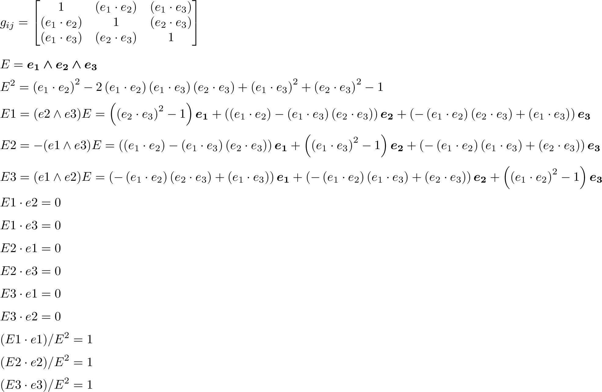
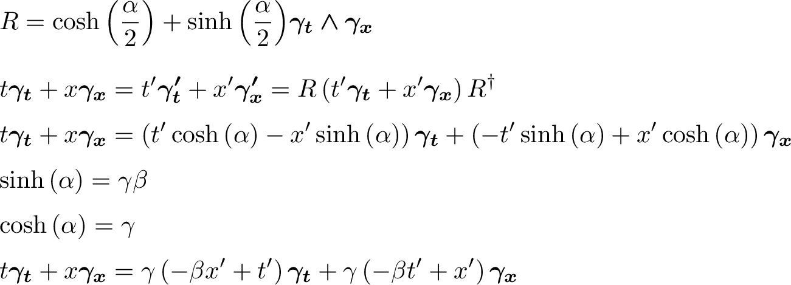
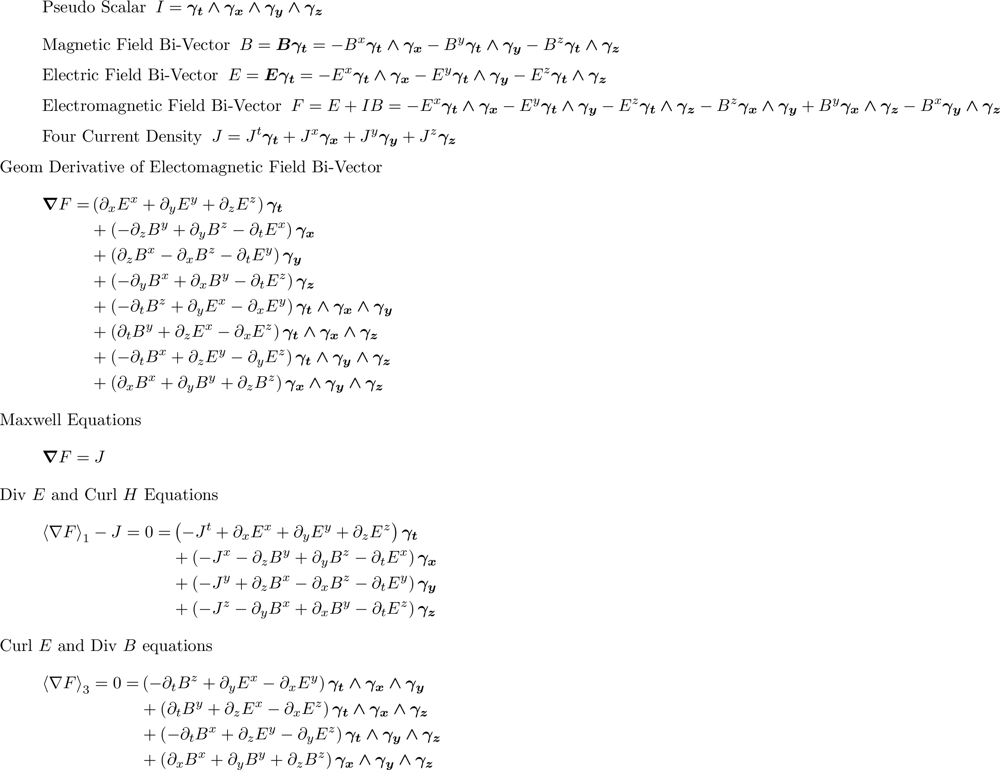
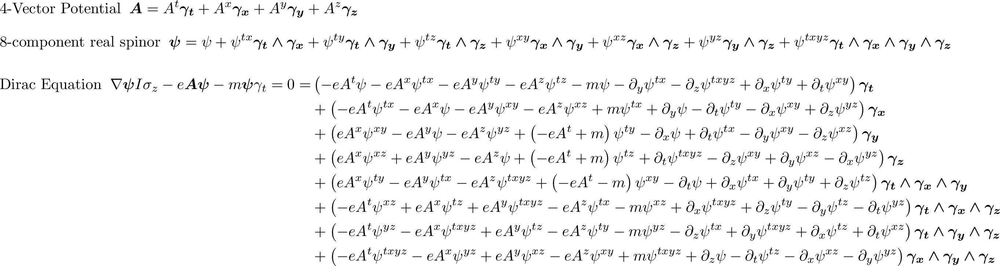

Geometric Algebra¶
| Author: | Alan Bromborsky |
|---|
Abstract
This document describes the implementation, installation and use of a geometric algebra module written in python that utilizes the sympy symbolic algebra library. The python module ga has been developed for coordinate free calculations using the operations (geometric, outer, and inner products etc.) of geometric algebra. The operations can be defined using a completely arbitrary metric defined by the inner products of a set of arbitrary vectors or the metric can be restricted to enforce orthogonality and signature constraints on the set of vectors. Additionally, a metric that is a function of a coordinate set can be defined so that a geometric algebra over a manifold can be implemented. Geometric algebras over submanifolds of the base manifold are also supported as well as linear multivector differential operators and linear transformations. In addition the module includes the geometric, outer (curl) and inner (div) derivatives. Tensors are included in the module as multilinear functions of vectors with contraction and covariant differentiation defined without the need of component indices. For latex output a latex distribution must be installed. A more detail description of the module and the mathematics behind it is at GA[pg 12].
What is Geometric Algebra?¶
\[\begin{split}\newcommand{\bm}[1]{\boldsymbol{#1}} \newcommand{\bfrac}[2]{\displaystyle\frac{#1}{#2}} \newcommand{\lp}{\left (} \newcommand{\rp}{\right )} \newcommand{\half}{\frac{1}{2}} \newcommand{\llt}{\left <} \newcommand{\rgt}{\right >} \newcommand{\abs}[1]{\left |{#1}\right |} \newcommand{\pdiff}[2]{\bfrac{\partial {#1}}{\partial {#2}}} \newcommand{\pdifftwo}[3]{\bfrac{\partial^{2} {#1}}{\partial {#2}\partial {#3}}} \newcommand{\lbrc}{\left \{} \newcommand{\rbrc}{\right \}} \newcommand{\set}[1]{\lbrc {#1} \rbrc} \newcommand{\W}{\wedge} \newcommand{\R}{\dagger} \newcommand{\lbrk}{\left [} \newcommand{\rbrk}{\right ]} \newcommand{\com}[1]{\lbrk {#1} \rbrk} \newcommand{\proj}[2]{\llt {#1} \rgt_{#2}} \newcommand{\braces}[1]{\left \{ {#1} \right \}} \newcommand{\grade}[1]{\left < {#1} \right >} \newcommand{\f}[2]{{#1}\lp {#2} \rp} \newcommand{\paren}[1]{\lp {#1} \rp} \newcommand{\eval}[2]{\left . {#1} \right |_{#2}} \newcommand{\prm}[1]{{#1}'} \newcommand{\ddt}[1]{\bfrac{d{#1}}{dt}} \newcommand{\deriv}[3]{\bfrac{d^{#3}#1}{d{#2}^{#3}}} \newcommand{\be}{\begin{equation}} \newcommand{\ee}{\end{equation}} \newcommand{\eb}{\bm{e}} \newcommand{\ehb}{\bm{\hat{e}}} \newcommand{\Tn}[2]{\f{\mathcal{T}_{#2}}{#1}} \newcommand{\tr}{\mbox{tr}} \newcommand{\T}[1]{\texttt{#1}} \newcommand{\grd}{\bm{\nabla}}\end{split}\]Geometric algebra is the Clifford algebra of a real finite dimensional vector space or the algebra that results when the vector space is extended with a product of vectors (geometric product) that is associative, left and right distributive, and yields a real number for the square (geometric product) of any vector [Hestenes], [Doran]. The elements of the geometric algebra are called multivectors and consist of the linear combination of scalars, vectors, and the geometric product of two or more vectors. The additional axioms for the geometric algebra are that for any vectors \(a\), \(b\), and \(c\) in the base vector space ([Doran],p85):
\[\begin{equation*} \begin{array}{c} a\left ( bc \right ) = \left ( ab \right ) c \\ a\left ( b+c \right ) = ab+ac \\ \left ( a + b \right ) c = ac+bc \\ aa = a^{2} \in \Re \end{array} \end{equation*}\]The dot product of two vectors is defined by ([Doran],p86)
\[\begin{equation} a\cdot b \equiv (ab+ba)/2 \end{equation}\]Then consider
\[\begin{align} c &= a+b \\ c^{2} &= (a+b)^{2} \\ c^{2} &= a^{2}+ab+ba+b^{2} \\ a\cdot b &= (c^{2}-a^{2}-b^{2})/2 \in \Re \end{align}\]Thus \(a\cdot b\) is real. The objects generated from linear combinations of the geometric products of vectors are called multivectors. If a basis for the underlying vector space is the set of vectors formed from \(\boldsymbol{e}_{1},\dots,\boldsymbol{e}_{n}\) (we use boldface \(\boldsymbol{e}\)‘s to denote basis vectors) a complete basis for the geometric algebra is given by the scalar \(1\), the vectors \(\boldsymbol{e}_{1},\dots,\boldsymbol{e}_{n}\) and all geometric products of basis vectors
\[\begin{equation} \boldsymbol{e}_{i_{1}}\boldsymbol{e}_{i_{2}}\dots \boldsymbol{e}_{i_{r}} \mbox{ where } 0\le r \le n,\;0 \le i_{j} \le n \mbox{ and } i_{1}\lt i_{2}\lt \dots\lt i_{r} \end{equation}\]Each base of the complete basis is represented by a noncommutative symbol (except for the scalar 1) with name \(\boldsymbol{e}_{i_{1}}\dots \boldsymbol{e}_{i_{r}}\) so that the general multivector \(\boldsymbol{A}\) is represented by (\(A\) is the scalar part of the multivector and the \(A^{i_{1},\dots,i_{r}}\) are scalars)
\[\begin{equation} \boldsymbol{A} = A + \sum_{r=1}^{n}\sum_{i_{1},\dots,i_{r}}^{0\le i_{j}\lt i_{j+1} \le n} A^{i_{1},\dots,i_{r}}\boldsymbol{e}_{i_{1}}\boldsymbol{e}_{i_{2}}\dots \boldsymbol{e}_{i_{r}} \end{equation}\]The critical operation in setting up the geometric algebra is reducing the geometric product of any two bases to a linear combination of bases so that we can calculate a multiplication table for the bases. Since the geometric product is associative we can use the operation (by definition for two vectors \(a\cdot b \equiv (ab+ba)/2\) which is a scalar)
\[ \begin{equation}\label{reduce} \boldsymbol{e}_{i_{j+1}}\boldsymbol{e}_{i_{j}} = 2\boldsymbol{e}_{i_{j+1}}\cdot \boldsymbol{e}_{i_{j}} - \boldsymbol{e}_{i_{j}}\boldsymbol{e}_{i_{j+1}} \end{equation}\]These processes are repeated untill every basis list in \(\boldsymbol{A}\) is in normal (ascending) order with no repeated elements. As an example consider the following
\[ \begin{align*} \boldsymbol{e}_{3}\boldsymbol{e}_{2}\boldsymbol{e}_{1} &= (2(\boldsymbol{e}_{2}\cdot \boldsymbol{e}_{3}) - \boldsymbol{e}_{2}\boldsymbol{e}_{3})\boldsymbol{e}_{1} \\ &= 2\left ( \boldsymbol{e}_{2}\cdot \boldsymbol{e}_{3}\right )\boldsymbol{e}_{1} - \boldsymbol{e}_{2}\boldsymbol{e}_{3}\boldsymbol{e}_{1} \\ &= 2\left ( \boldsymbol{e}_{2}\cdot \boldsymbol{e}_{3}\right )\boldsymbol{e}_{1} - \boldsymbol{e}_{2}\left ( 2\left ( \boldsymbol{e}_{1}\cdot \boldsymbol{e}_{3}\right ) - \boldsymbol{e}_{1}\boldsymbol{e}_{3}\right ) \\ &= 2\left ( \left ( \boldsymbol{e}_{2}\cdot \boldsymbol{e}_{3}\right )\boldsymbol{e}_{1} - \left ( \boldsymbol{e}_{1}\cdot \boldsymbol{e}_{3}\right )\boldsymbol{e}_{2}\right )+\boldsymbol{e}_{2}\boldsymbol{e}_{1}\boldsymbol{e}_{3} \\ &= 2\left ( \left ( {\boldsymbol{e}_{2}\cdot \boldsymbol{e}_{3}}\right )\boldsymbol{e}_{1} - \left ( {\boldsymbol{e}_{1}\cdot \boldsymbol{e}_{3}}\right )\boldsymbol{e}_{2}+ \left ( \boldsymbol{e}_{1}\cdot \boldsymbol{e}_{2}\right )\boldsymbol{e}_{3}\right )-\boldsymbol{e}_{1}\boldsymbol{e}_{2}\boldsymbol{e}_{3} \end{align*}\]which results from repeated application of eq. (\(\ref{reduce}\)). If the product of basis vectors contains repeated factors eq. (\(\ref{reduce}\)) can be used to bring the repeated factors next to one another so that if \(\boldsymbol{e}_{i_{j}} = \boldsymbol{e}_{i_{j+1}}\) then \(\boldsymbol{e}_{i_{j}}\boldsymbol{e}_{i_{j+1}} = \boldsymbol{e}_{i_{j}}\cdot \boldsymbol{e}_{i_{j+1}}\) which is a scalar that commutes with all the terms in the product and can be brought to the front of the product. Since every repeated pair of vectors in a geometric product of \(r\) factors reduces the number of noncommutative factors in the product by \(r-2\). The number of bases in the multivector algebra is \(2^{n}\) and the number containing \(r\) factors is \({n\choose r}\) which is the number of combinations or \(n\) things taken \(r\) at a time (binominal coefficient).
The other construction required for formulating the geometric algebra is the outer or wedge product (symbol \(\wedge\)) of \(r\) vectors denoted by \(a_{1}\wedge\dots\wedge a_{r}\). The wedge product of \(r\) vectors is called an \(r\)-blade and is defined by ([Doran],p86)
\[ \begin{equation} a_{1}\wedge\dots\wedge a_{r} \equiv \sum_{i_{j_{1}}\dots i_{j_{r}}} \epsilon^{i_{j_{1}}\dots i_{j_{r}}}a_{i_{j_{1}}}\dots a_{i_{j_{1}}} \end{equation}\]where \(\epsilon^{i_{j_{1}}\dots i_{j_{r}}}\) is the contravariant permutation symbol which is \(+1\) for an even permutation of the superscripts, \(0\) if any superscripts are repeated, and \(-1\) for an odd permutation of the superscripts. From the definition \(a_{1}\wedge\dots\wedge a_{r}\) is antisymmetric in all its arguments and the following relation for the wedge product of a vector \(a\) and an \(r\)-blade \(\boldsymbol{B}_{r}\) can be derived
\[ \begin{equation}\label{wedge} a\wedge \boldsymbol{B}_{r} = (a\boldsymbol{B}_{r}+(-1)^{r}\boldsymbol{B}_{r}a)/2 \end{equation}\]Using eq. (\(\ref{wedge}\)) one can represent the wedge product of all the basis vectors in terms of the geometric product of all the basis vectors so that one can solve (the system of equations is lower diagonal) for the geometric product of all the basis vectors in terms of the wedge product of all the basis vectors. Thus a general multivector \(\boldsymbol{B}\) can be represented as a linear combination of a scalar and the basis blades.
\[ \begin{equation} \boldsymbol{B} = B + \sum_{r=1}^{n}\sum_{i_{1},\dots,i_{r},\;\forall\; 0\le i_{j} \le n} B^{i_{1},\dots,i_{r}}\boldsymbol{e}_{i_{1}}\wedge \boldsymbol{e}_{i_{2}}\wedge\dots\wedge \boldsymbol{e}_{r} \end{equation}\]Using the blades \(\boldsymbol{e}_{i_{1}}\wedge \boldsymbol{e}_{i_{2}}\wedge\dots\wedge \boldsymbol{e}_{r}\) creates a graded algebra where \(r\) is the grade of the basis blades. The grade-\(r\) part of \(\boldsymbol{B}\) is the linear combination of all terms with grade \(r\) basis blades. The scalar part of \(\boldsymbol{B}\) is defined to be grade-\(0\). Now that the blade expansion of \(\boldsymbol{B}\) is defined we can also define the grade projection operator \(\left < \boldsymbol{B}\right >_{r}\) by
\[ \begin{equation} \left < \boldsymbol{B}\right >_{r} = \sum_{i_{1},\dots,i_{r},\;\forall\; 0\le i_{j} \le n} B^{i_{1},\dots,i_{r}}\boldsymbol{e}_{i_{1}}\wedge \boldsymbol{e}_{i_{2}}\wedge\dots\wedge \boldsymbol{e}_{r} \end{equation}\]and
\[ \begin{equation} \left < \boldsymbol{B}\right >_{} \equiv \left < \boldsymbol{B}\right >_{0} = B \end{equation}\]Then if \(\boldsymbol{A}_{r}\) is an \(r\)-grade multivector and \(\boldsymbol{B}_{s}\) is an \(s\)-grade multivector we have
\[ \begin{equation} \boldsymbol{A}_{r}\boldsymbol{B}_{s} = \left < \boldsymbol{A}_{r}\boldsymbol{B}_{s}\right >_{\left | {r-s}\right |}+ \left < \boldsymbol{A}_{r}\boldsymbol{B}_{s}\right >_{\left | {r-s}+2\right |}+\cdots \left < \boldsymbol{A}_{r}\boldsymbol{B}_{s}\right >_{r+s} \end{equation}\]and define ([Hestenes],p6)
\[ \begin{align} \boldsymbol{A}_{r}\wedge\boldsymbol{B}_{s} &\equiv \left < \boldsymbol{A}_{r}\boldsymbol{B}_{s}\right >_{r+s} \\ \boldsymbol{A}_{r}\cdot\boldsymbol{B}_{s} &\equiv \left \{ \begin{array}{cc} r\mbox{ and }s \ne 0: & \left < \boldsymbol{A}_{r}\boldsymbol{B}_{s}\right >_{\left | {r-s}\right |} \\ r\mbox{ or }s = 0: & 0 \end{array} \right \} \end{align}\]where \(\boldsymbol{A}_{r}\cdot\boldsymbol{B}_{s}\) is called the dot or inner product of two pure grade multivectors. For the case of two non-pure grade multivectors
\[ \begin{align} \boldsymbol{A}\wedge\boldsymbol{B} &= \sum_{r,s}\left < \boldsymbol{A}\right >_{r}\wedge\left < \boldsymbol{B}\right >_{{s}} \\ \boldsymbol{A}\cdot\boldsymbol{B} &= \sum_{r,s\ne 0}\left < \boldsymbol{A}\right >_{r}\cdot\left < \boldsymbol{B}\right >_{{s}} \end{align}\]Two other products, the right (\(\rfloor\)) and left (\(\lfloor\)) contractions, are defined by
\[ \begin{align} \boldsymbol{A}\lfloor\boldsymbol{B} &\equiv \sum_{r,s}\left \{\begin{array}{cc} \left < \boldsymbol{A}_r\boldsymbol{B}_{s}\right >_{r-s} & r \ge s \\ 0 & r < s \end{array}\right \} \\ \boldsymbol{A}\rfloor\boldsymbol{B} &\equiv \sum_{r,s}\left \{\begin{array}{cc} \left < \boldsymbol{A}_{r}\boldsymbol{B}_{s}\right >_{s-r} & s \ge r \\ 0 & s < r\end{array}\right \} \end{align}\]A final operation for multivectors is the reverse. If a multivector \(\boldsymbol{A}\) is the geometric product of \(r\) vectors (versor) so that \(\boldsymbol{A} = a_{1}\dots a_{r}\) the reverse is defined by
\[ \begin{align} \boldsymbol{A}^{\dagger} \equiv a_{r}\dots a_{1} \end{align}\]where for a general multivector we have (the the sum of the reverse of versors)
\[ \begin{equation} \boldsymbol{A}^{\dagger} = A + \sum_{r=1}^{n}(-1)^{r(r-1)/2}\sum_{i_{1},\dots,i_{r},\;\forall\; 0\le i_{j} \le n} A^{i_{1},\dots,i_{r}}\boldsymbol{e}_{i_{1}}\wedge \boldsymbol{e}_{i_{2}}\wedge\dots\wedge \boldsymbol{e}_{r} \end{equation}\]note that if \(\boldsymbol{A}\) is a versor then \(\boldsymbol{A}\boldsymbol{A}^{\dagger}\in\Re\) and if \(\boldsymbol{AA}^{\dagger} \ne 0\) then
\[ \begin{equation} \boldsymbol{A}^{-1} = \frac{\boldsymbol{A}^{\dagger}}{\boldsymbol{AA}^{\dagger}}. \end{equation}\]
Representation of Multivectors in sympy¶
The sympy python module offers a simple way of representing multivectors using linear combinations of commutative expressions (expressions consisting only of commuting sympy objects) and noncommutative symbols. We start by defining \(n\) noncommutative sympy symbols as a basis for the vector space
(e_1,...,e_n) = symbols('e_1,...,e_n',commutative=False)Several software packages for numerical geometric algebra calculations are available from Doran-Lasenby group and the Dorst group. Symbolic packages for Clifford algebra using orthongonal bases such as \(\boldsymbol{e}_{i}\boldsymbol{e}_{j}+\boldsymbol{e}_{j}\boldsymbol{e}_{i} = 2\eta_{ij}\), where \(\eta_{ij}\) is a numeric array are available in Maple and Mathematica. The symbolic algebra module, ga, developed for python does not depend on an orthogonal basis representation, but rather is generated from a set of \(n\) arbitrary symbolic vectors \(\boldsymbol{e}_{1},\boldsymbol{e}_{2},\dots,\boldsymbol{e}_{n}\) and a symbolic metric tensor \(g_{ij} = \boldsymbol{e}_{i}\cdot \boldsymbol{e}_{j}\) (the symbolic metric can be symbolic constants or symbolic functions in the case of a manifold).
All scalar symbolic algebra is handled by the python module sympy and the abstract basis vectors are encoded as noncommuting sympy symbols.
The basic geometic algebra operations will be implemented in python by defining a geometric algebra class, Ga, that performs all required geometric algebra an calculus operations on sympy expressions of the form (Einstein summation convention)
\[ \begin{equation} F +\sum_{r=1}^{n}F^{i_{1}\dots i_{r}}\boldsymbol{e}_{i_{1}}\dots\boldsymbol{e}_{i_{r}} \end{equation}\]where the \(F\)‘s are sympy symbolic constants or functions of the coordinates and a multivector class, Mv, that wraps Ga and overloads the python operators to provide all the needed multivector operations as shown in the table of multivector operations where A and B are any two multivectors (In the case of +, -, *, ^, |, <, and > the operation is also defined if A or B is a sympy symbol or a sympy real number).

Since < and > have no r-forms (in python for the < and > operators there are no __rlt__() and __rgt__() member functions to overload) we can only have mixed modes (scalars and multivectors) if the first operand is a multivector.
Except for < and > all the multivector operators have r-forms so that as long as one of the operands, left or right, is a multivector the other can be a multivector or a scalar (sympy symbol or integer).
Note that the operator order precedence is determined by python and is not necessarily that used by geometric algebra. It is absolutely essential to use parenthesis in multivector expressions containing ^, |, <, and/or >. As an example let A and B be any two multivectors. Then A + A*B = A +(A*B), but A+A^B = (2*A)^B since in python the ^ operator has a lower precedence than the + operator. In geometric algebra the outer and inner products and the left and right contractions have a higher precedence than the geometric product and the geometric product has a higher precedence than addition and subtraction. In python the ^, |, >, and < all have a lower precedence than + and - while * has a higher precedence than + and -.
For those users who wish to define a default operator precedence the functions def_prec() and GAeval() are available in the module printer.
def_prec(gd,op_ord=’<>|,^,*’)
Define the precedence of the multivector operations. The function def_prec() must be called from the main program and the first argument gd must be set to globals(). The second argument op_ord determines the operator precedence for expressions input to the function GAeval(). The default value of op_ord is <>|,^,*. For the default value the <, >, and | operations have equal precedence followed by ^, and ^ is followed by *.GAeval(s,pstr=False)
The function GAeval() returns a multivector expression defined by the string s where the operations in the string are parsed according to the precedences defined by define_precedence(). pstr is a flag to print the input and output of GAeval() for debugging purposes. GAeval() works by adding parenthesis to the input string s with the precedence defined by op_ord=’<>|,^,*’. Then the parsed string is converted to a sympy expression using the python eval() function. For example consider where X, Y, Z, and W are multivectors
def_prec(globals()) V = GAeval('X|Y^Z*W')The sympy variable V would evaluate to ((X|Y)^Z)*W.
Vector Basis and Metric¶
The two structures that define the metric class (inherited by the geometric algebra class) are the symbolic basis vectors and the symbolic metric. The symbolic basis vectors are input as a string with the symbol name separated by spaces. For example if we are calculating the geometric algebra of a system with three vectors that we wish to denote as a0, a1, and a2 we would define the string variable:
basis = 'a0 a1 a2'that would be input into the function which instantiates the geometric algebra. The next step would be to define the symbolic metric for the geometric algebra of the basis we have defined. The default metric is the most general and is the matrix of the following symbols
\[\begin{equation}\label{metric} g = \left [ \begin{array}{ccc} (a0.a0) & (a0.a1) & (a0.a2) \\ (a0.a1) & (a1.a1) & (a1.a2) \\ (a0.a2) & (a1.a2) & (a2.a2) \end{array} \right ] \end{equation}\]where each of the \(g_{ij}\) is a symbol representing all of the dot products of the basis vectors. Note that the symbols are named so that \(g_{ij} = g_{ji}\) since for the sympy symbols \((a0.a1) \ne (a1.a0)\). Note that the strings shown in eq \(\ref{metric}\) are only used when the values of \(g_{ij}\) are output (printed). In the ga module (library) the \(g_{ij}\) symbols are stored in a member of the geometric algebra instance so that if o3d is a geometric algebra then o3d.g is the metric tensor (\(g_{ij} =\) o3d.g[i,j]) for that algebra.
The default definition of \(g\) can be overwritten by specifying a string that will define \(g\). As an example consider a symbolic representation for conformal geometry. Define a basis
basis = 'a0 a1 a2 n nbar'and a metric
g = '# # # 0 0, # # # 0 0, # # # 0 0, 0 0 0 0 2, 0 0 0 2 0'then calling cf3d = Ga(basis,g=g) would initialize the metric tensor
\[\begin{equation} g = \left [ \begin{array}{ccccc} (a0.a0) & (a0.a1) & (a0.a2) & 0 & 0\\ (a0.a1) & (a1.a1) & (a1.a2) & 0 & 0\\ (a0.a2) & (a1.a2) & (a2.a2) & 0 & 0 \\ 0 & 0 & 0 & 0 & 2 \\ 0 & 0 & 0 & 2 & 0 \end{array} \right [ \end{equation}\]for the cf3d (conformal 3-d) geometric algebra.
Here we have specified that n and nbar are orthogonal to all the a‘s, (n.n) = (nbar.nbar) = 0, and (n.nbar) = 2. Using # in the metric definition string just tells the program to use the default symbol for that value.
When Ga is called multivector representations of the basis local to the program are instantiated. For the case of an orthogonal 3-d vector space that means the symbolic vectors named a0, a1, and a2 are created. We can instantiate the geometric algebra and obtain the basis vectors with -
o3d = Ga('a_1 a_2 a_3',g=[1,1,1]) (a_1,a_2,a_3) = o3d.mv()or use the Ga.build() function -
(o3d,a_1,a_2,a_3) = Ga.build('a_1 a_2 a_3',g=[1,1,1])Note that the python variable name for a basis vector does not have to correspond to the name give in Ga() or Ga.build(), one may wish to use a shortened python variable name to reduce programming (typing) errors, for example one could use -
(o3d,a1,a2,a3) = Ga.build('a_1 a_2 a_3',g=[1,1,1])or
(st4d,g0,g1,g2,g3) = Ga.build('gamma_0 gamma_1 gamma_2 gamma_3',g=[1,-1,-1,-1])for Minkowski spacetime.
If the latex printer is used e1 would print as \(\boldsymbol{e_{1}}\) and g1 as \(\boldsymbol{\gamma_{1}}\).
Additionally Ga() and Ga.build() has simpified options for naming a set of basis vectors and for inputing an othogonal basis.
If one wishes to name the basis vectors \(\boldsymbol{e}_{x}\), \(\boldsymbol{e}_{y}\), and \(\boldsymbol{e}_{z}\) then set basis=’e*x|y|z’ or to name \(\boldsymbol{\gamma}_{t}\), \(\boldsymbol{\gamma}_{x}\), \(\boldsymbol{\gamma}_{y}\), and \(\boldsymbol{\gamma}_{z}\) then set basis=’gamma*t|x|y|z’. For the case of an othogonal basis if the signature of the vector space is \((1,1,1)\) (Euclidian 3-space) set g=[1,1,1] or if it is \((1,-1,-1,-1)\) (Minkowsi 4-space) set g=[1,-1,-1,-1]. If g is a function of position then g can be entered as a sympy matrix with sympy functions as the entries of the matrix or as a list of functions for the case of a orthogonal metric. In the case of spherical coordinates we have g=[1,r**2,r**2*sin(th)**2].
Representation and Reduction of Multivector Bases¶
In our symbolic geometric algebra all multivectors can be obtained from the symbolic basis vectors we have input, via the different operations available to geometric algebra. The first problem we have is representing the general multivector in terms terms of the basis vectors. To do this we form the ordered geometric products of the basis vectors and develop an internal representation of these products in terms of python classes. The ordered geometric products are all multivectors of the form \(a_{i_{1}}a_{i_{2}}\dots a_{i_{r}}\) where \(i_{1}<i_{2}<\dots <i_{r}\) and \(r \le n\). We call these multivectors bases and represent them internally with noncommutative symbols so for example \(a_{1}a_{2}a_{3}\) is represented by
In the simplest case of two basis vectors a_1 and a_2 we have a list of bases
For the case of the basis blades we have
The index tupels for the bases of each pseudo grade and each grade for the case of dimension 3 is
Then the noncommutative symbol representing each base is constructed from each index tuple. For example for self.indexes[1][1] the symbol is Symbol(‘a_1*a_3’,commutative=False).
Base Representation of Multivectors¶
In terms of the bases defined as noncommutative sympy symbols the general multivector is a linear combination (scalar sympy coefficients) of bases so that for the case of two bases the most general multivector is given by -
A = A_0+A__1*self.bases[1][0]+A__2*self.bases[1][1]+A__12*self.bases[2][0]If we have another multivector B to multiply with A we can calculate the product in terms of a linear combination of bases if we have a multiplication table for the bases.
Blade Representation of Multivectors¶
Since we can now calculate the symbolic geometric product of any two multivectors we can also calculate the blades corresponding to the product of the symbolic basis vectors using the formula
\[\begin{equation} A_{r}\wedge b = \frac{1}{2}\left ( A_{r}b-\left ( -1 \right )^{r}bA_{r} \right ), \end{equation}\]where \(A_{r}\) is a multivector of grade \(r\) and \(b\) is a vector. For our example basis the result is the table
1 = 1 a0 = a0 a1 = a1 a2 = a2 a0^a1 = {-(a0.a1)}1+a0a1 a0^a2 = {-(a0.a2)}1+a0a2 a1^a2 = {-(a1.a2)}1+a1a2 a0^a1^a2 = {-(a1.a2)}a0+{(a0.a2)}a1+{-(a0.a1)}a2+a0a1a2which gives the bases blades in terms of bases.
The important thing to notice about this expansion is that it is a triagonal (lower triangular) system of equations so that using a simple back substitution algorithm we can solve for the pseudo bases in terms of the blades giving the table
1 = 1 a0 = a0 a1 = a1 a2 = a2 a0a1 = {(a0.a1)}1+a0^a1 a0a2 = {(a0.a2)}1+a0^a2 a1a2 = {(a1.a2)}1+a1^a2 a0a1a2 = {(a1.a2)}a0+{-(a0.a2)}a1+{(a0.a1)}a2+a0^a1^a2of the bases in terms of the basis blades.
Using these tables and simple substitution we can convert from a base multivector representation to a blade representation and vice versa.
Using the blade representation it becomes simple to program functions that will calculate the grade projection, reverse, even, and odd multivector functions.
Note that in the multivector class Mv there is a class variable for each instantiation, self.is_blade_rep, that is set to False for a base representation and True for a blade representation. One needs to keep track of which representation is in use since various multivector operations require conversion from one representation to the other.
Outer and Inner Products, Left and Right Contractions¶
In geometric algebra any general multivector \(A\) can be decomposed into pure grade multivectors (a linear combination of blades of all the same order) so that in a \(n\)-dimensional vector space
The geometric product of two pure grade multivectors \(A_{r}\) and \(B_{s}\) has the form
where \(\left < { } \right >_{t}\) projects the \(t\) grade components of the multivector argument. The inner and outer products of \(A_{r}\) and \(B_{s}\) are then defined to be
and
Likewise the right (\(\lfloor\)) and left (\(\rfloor\)) contractions are defined as
and
Warning
In the MV class we have overloaded the ^ operator to represent the outer product so that instead of calling the outer product function we can write mv1^ mv2. Due to the precedence rules for python it is absolutely essential to enclose outer products in parenthesis.
Warning
In the MV class we have overloaded the | operator for the inner product, > operator for the right contraction, and < operator for the left contraction. Instead of calling the inner product function we can write mv1|mv2, mv1>mv2, or mv1<mv2 respectively for the inner product, right contraction, or left contraction. Again, due to the precedence rules for python it is absolutely essential to enclose inner products and/or contractions in parenthesis.
Reverse of Multivector¶
If \(A\) is the geometric product of \(r\) vectors
\[\begin{equation} A = a_{1}\dots a_{r} \end{equation}\]then the reverse of \(A\) designated \(A^{\dagger}\) is defined by
\[\begin{equation} A^{\dagger} \equiv a_{r}\dots a_{1}. \end{equation}\]The reverse is simply the product with the order of terms reversed. The reverse of a sum of products is defined as the sum of the reverses so that for a general multivector A we have
\[\begin{equation} A^{\dagger} = \sum_{i=0}^{N} {\left < {A} \right >_{i}}^{\dagger} \end{equation}\]but
\[\begin{equation} {\left < {A} \right >_{i}}^{\dagger} = \left ( -1\right )^{\frac{i\left ( i-1\right )}{2}}\left < {A} \right >_{i} \end{equation}\]which is proved by expanding the blade bases in terms of orthogonal vectors and showing that eq. \(\ref{eq_4}\) holds for the geometric product of orthogonal vectors.
The reverse is important in the theory of rotations in \(n\)-dimensions. If \(R\) is the product of an even number of vectors and \(RR^{\dagger} = 1\) then \(RaR^{\dagger}\) is a composition of rotations of the vector \(a\). If \(R\) is the product of two vectors then the plane that \(R\) defines is the plane of the rotation. That is to say that \(RaR^{\dagger}\) rotates the component of \(a\) that is projected into the plane defined by \(a\) and \(b\) where \(R=ab\). \(R\) may be written \(R = e^{\frac{\theta}{2}U}\), where \(\theta\) is the angle of rotation and \(u\) is a unit blade \(\left ( u^{2} = \pm 1\right )\) that defines the plane of rotation.
Reciprocal Frames¶
If we have \(M\) linearly independent vectors (a frame), \(a_{1},\dots,a_{M}\), then the reciprocal frame is \(a^{1},\dots,a^{M}\) where \(a_{i}\cdot a^{j} = \delta_{i}^{j}\), \(\delta_{i}^{j}\) is the Kronecker delta (zero if \(i \ne j\) and one if \(i = j\)). The reciprocal frame is constructed as follows:
\[\begin{equation} E_{M} = a_{1}\wedge\dots\wedge a_{M} \end{equation}\]\[\begin{equation} E_{M}^{-1} = \frac{E_{M}}{E_{M}^{2}} \end{equation}\]Then
\[\begin{equation} a^{i} = \left ( -1\right )^{i-1}\left ( a_{1}\wedge\dots\wedge \breve{a}_{i} \wedge\dots\wedge a_{M}\right ) E_{M}^{-1} \end{equation}\]where \(\breve{a}_{i}\) indicates that \(a_{i}\) is to be deleted from the product. In the standard notation if a vector is denoted with a subscript the reciprocal vector is denoted with a superscript. The set of reciprocal vectors will be calculated if a coordinate set is given when a geometric algebra is instantiated since they are required for geometric differentiation.
Manifolds and Submanifolds¶
A \(m\)-dimensional vector manifold (By the manifold embedding theorem any \(m\)-dimensional manifold is isomorphic to a \(m\)-dimensional vector manifold), \(\mathcal{M}\), is defined by a coordinate tuple (tuples are indicated by the vector accent \(\vec{x}\))
\[ \begin{equation} \vec{x} = \left ( x^{1},\dots,x^{m} \right ), \end{equation}\]and the differentiable mapping (\(U^{m}\) is an \(m\)-dimensional subset of \(\Re^{m}\))
\[ \begin{equation} \boldsymbol{e}^{\mathcal{M}}(\vec{x})\colon U^{m}\subseteq\Re^{m}\rightarrow \mathcal{V}, \end{equation}\]where \(\mathcal{V}\) is a vector space with an inner product (\(\cdot\)) and is of \(\dim (\mathcal{V}) \ge m\).
Then a set of basis vectors for the tangent space of \(\mathcal{M}\) at \(\vec{x}\), \(\mathcal{T}_{\vec{x}}\left( \mathcal{M} \right )\), are
\[ \begin{equation} \boldsymbol{e}_{i}^{\mathcal{M}} = \partial_{x^{i}}\boldsymbol{e}^{\mathcal{M}} \end{equation}\]and
\[ \begin{equation} g_{ij}^{\mathcal{M}}\left (\vec{x}\right ) = \boldsymbol{e}_{i}^{\mathcal{M}}\cdot \boldsymbol{e}_{j}^{\mathcal{M}}. \end{equation}\]A \(n\)-dimensional (\(n\le m\)) submanifold \(\mathcal{N}\) of \(\mathcal{M}\) is defined by a coordinate tuple
\[ \begin{equation} \vec{u} = \left (u^{1},\dots,u^{n} \right ), \end{equation}\]and a differentiable mapping
\[ \begin{equation}\label{eq_79} \vec{x}(\vec{u})\colon U^{n}\subseteq\Re^{n}\rightarrow U^{m}\subseteq\Re^{m}, \end{equation}\]which induces a mapping
\[ \begin{equation} \boldsymbol{e}^{\mathcal{M}}\left (\vec{x}(\vec{u})\right )\colon U^{n}\subseteq\Re^{n}\rightarrow \mathcal{V}. \end{equation}\]Then the basis vectors for the tangent space \(\mathcal{T}_{\vec{u}}\left( \mathcal{N} \right )\) are (using \(\boldsymbol{e}^{\mathcal{N}}(\vec{u}) = \boldsymbol{e}^{\mathcal{M}}(\vec{x}(\vec{u}))\) and the chain rule)
\[ \begin{equation} \boldsymbol{e}_{i}^{\mathcal{N}}(\vec{u}) = \partial_{u^{i}}\boldsymbol{e}^{\mathcal{N}}(\vec{u}) = \partial_{x^{j}}\boldsymbol{e}^{\mathcal{M}}(\vec{x})\partial_{u^{i}}x^{j} = \boldsymbol{e}_{j}^{\mathcal{M}}(\vec{x}(\vec{u}))\partial_{u^{i}}x^{j}, \end{equation}\]and
\[ \begin{equation}\label{eq_53} g_{ij}^{\mathcal{N}}(\vec{u}) = \partial_{u^{i}}{x^{k}}\partial_{u^{j}}{x^{l}} g_{kl}^{\mathcal{M}}\vec{x}(\vec{u}). \end{equation}\]Going back to the base manifold, \(\mathcal{M}\), note that the mapping \(\boldsymbol{e}^{\mathcal{M}}(\vec{x})\colon U^{n}\subseteq\Re^{n}\rightarrow \mathcal{V}\) allows us to calculate an unormalized pseudo-scalar for \(\mathcal{T}_{\vec{x}}(\mathcal{M})\),
\[ \begin{equation} I^{\mathcal{M}}(\vec{x}) = \boldsymbol{e}_{1}^{\mathcal{M}}(\vec{x}) \wedge\dots\wedge \boldsymbol{e}_{m}^{\mathcal{M}}(\vec{x}). \end{equation}\]With the pseudo-scalar we can define a projection operator from \(\mathcal{V}\) to the tangent space of \(\mathcal{M}\) by
\[ \begin{equation} P_{\vec{x}}(v) = \left (v\cdot I^{\mathcal{M}}(\vec{x})\right) \left (I^{\mathcal{M}}(\vec{x})\right )^{-1} \;\forall\; v\in\mathcal{V}. \end{equation}\]In fact for each tangent space \(\mathcal{T}_{\vec{x}}(\mathcal{M})\) we can define a geometric algebra \(\mathcal{G}\left (\mathcal{T}_{\vec{x}}(\mathcal{M})\right )\) with pseudo-scalar \(I^{\mathcal{M}}\) so that if \(A \in \mathcal{G}(\mathcal{V})\) then
\[ \begin{equation} P_{\vec{x}}(A) = \left (A\cdot I^{\mathcal{M}}(\vec{x})\right ) \left (I^{\mathcal{M}}(\vec{x})\right )^{-1} \in \mathcal{G}\left (\mathcal{T}_{\vec{x}}(\mathcal{M})\right )\;\forall\; A \in \mathcal{G}(\mathcal{V}) \end{equation}\]and similarly for the submanifold \(\mathcal{N}\).
If the embedding \(\boldsymbol{e}^{\mathcal{M}}(\vec{x})\colon U^{n}\subseteq\Re^{n}\rightarrow \mathcal{V}\) is not given, but the metric tensor \(g_{ij}^{\mathcal{M}}(\vec{x})\) is given, the geometric algebra of the tangent space can be constructed. Also the derivatives of the basis vectors of the tangent space can be calculated from the metric tensor using the Christoffel symbols, \(\Gamma_{ij}^{k}(\vec{x})\), where the derivatives of the basis vectors are given by
\[ \begin{equation}\label{eq_79a} \partial_{x^{i}}\boldsymbol{e}_{j}^{\mathcal{M}} = \Gamma_{ij}^{k}(\vec{x})\boldsymbol{e}_{k}^{\mathcal{M}}. \end{equation}\]If we have a submanifold, \(\mathcal{N}\), defined by eq. (\(\ref{eq_79}\)) we can calculate the metric of \(\mathcal{N}\) from eq. (\(\ref{eq_53}\)) and hence construct the geometric algebra and calculus of the tangent space, \(\mathcal{T}_{\vec{u}}(\mathcal{N})\subseteq \mathcal{T}_{\vec{x}(\vec{u})}{\mathcal{M}}\).
If the base manifold is normalized (use the hat symbol to denote normalized tangent vectors, \(\boldsymbol{\hat{e}}_{i}^{\mathcal{M}}\), and the resulting metric tensor, \(\hat{g}_{ij}^{\mathcal{M}}\) we have \(\boldsymbol{\hat{e}}_{i}^{\mathcal{M}}\cdot\boldsymbol{\hat{e}}_{i}^{\mathcal{M}} = \pm 1\) and \(\hat{g}_{ij}^{\mathcal{M}}\) does not posess enough information to calculate \(g_{ij}^{\mathcal{N}}\). In that case we need to know \(g_{ij}^{\mathcal{M}}\), the metric tensor of the base manifold before normalization. Likewise, for the case of a vector manifold unless the mapping, \(\boldsymbol{e}^{\mathcal{M}}(\vec{x})\colon U^{m}\subseteq\Re^{m}\rightarrow \mathcal{V}\), is constant the tangent vectors and metric tensor can only be normalized after the fact (one cannot have a mapping that automatically normalizes all the tangent vectors).
Geometric Derivative¶
The directional derivative of a multivector field \(F(x)\) is defined by (\(a\) is a vector and \(h\) is a scalar)
\[\begin{equation}\label{eq_50} (a\cdot\nabla_{x})F \equiv \lim_{h\rightarrow 0}\frac{F(x+ah)-F(x)}{h}. \end{equation}\]Note that \(a\cdot\nabla_{x}\) is a scalar operator. It will give a result containing only those grades that are already in \(F\). \((a\cdot\nabla_{x})F\) is the best linear approximation of \(F(x)\) in the direction \(a\). Equation (\(\ref{eq_50}\)) also defines the operator \(\nabla_{x}\) which for a set of basis vectors, \(\left \{ \boldsymbol{e}_{i}\right \}\), has the representation (note that the \(\boldsymbol{e}^{j}\) are reciprocal basis vectors)
\[\begin{equation} \nabla_{x} F = \boldsymbol{e}^{j}\frac{\partial F}{\partial x^{j}} \end{equation}\]If \(F_{r}\) is a \(r\)-grade multivector (if the independent vector, \(x\), is obvious we suppress it in the notation and just write \(\nabla\)) and \(F_{r} = F_{r}^{i_{1}\dots i_{r}}\boldsymbol{e}_{i_{1}}\wedge\dots\wedge \boldsymbol{e}_{i_{r}}\) then
\[\begin{equation} \nabla F_{r} = \frac{\partial F_{r}^{i_{1}\dots i_{r}}}{\partial x^{j}}\boldsymbol{e}^{j}\left ( \boldsymbol{e}_{i_{1}}\wedge \dots\wedge \boldsymbol{e}_{i_{r}} \right ) \end{equation}\]Note that \(\boldsymbol{e}^{j}\left (\boldsymbol{e}_{i_{1}}\wedge\dots\wedge \boldsymbol{e}_{i_{r}} \right )\) can only contain grades \(r-1\) and \(r+1\) so that \(\nabla F_{r}\) also can only contain those grades. For a grade-\(r\) multivector \(F_{r}\) the inner (div) and outer (curl) derivatives are
\[\begin{equation} \nabla\cdot F_{r} = \left < \nabla F_{r}\right >_{r-1} = \boldsymbol{e}^{j}\cdot \partial_{x^{j}}F_{r} \end{equation}\]and
\[\begin{equation} \nabla\wedge F_{r} = \left < \nabla F_{r}\right >_{r+1} = \boldsymbol{e}^{j}\wedge \partial_{x^{j}}F_{r} \end{equation}\]For a general multivector function \(F\) the inner and outer derivatives are just the sum of the inner and outer dervatives of each grade of the multivector function.
Geometric Derivative on a Manifold¶
In the case of a manifold the derivatives of the \(\boldsymbol{e}_{i}\)‘s are functions of the coordinates, \(\left \{x^{i}\right \}\), so that the geometric derivative of a \(r\)-grade multivector field is (Einstein summation convention)
\[\begin{align} \nabla F_{r} &= \boldsymbol{e}^{i}\partial_{x^{i}}F_{r} = \boldsymbol{e}^{i}\partial_{x^{i}} \left ( F_{r}^{i_{1}\dots i_{r}} \boldsymbol{e}_{i_{1}}\wedge\dots\wedge \boldsymbol{e}_{i_{r}}\right ) \nonumber \\ &= \partial_{x^{i}} F_{r}^{i_{1}\dots i_{r}} \boldsymbol{e}^{i}\left ( \boldsymbol{e}_{i_{1}}\wedge\dots\wedge \boldsymbol{e}_{i_{r}} \right ) +F_{r}^{i_{1}\dots i_{r}}\boldsymbol{e}^{i}\partial_{x^{i}}\left ( \boldsymbol{e}_{i_{1}}\wedge\dots\wedge \boldsymbol{e}_{i_{r}} \right ) \end{align}\]where the multivector functions \(\boldsymbol{e}^{i}\partial_{x^{i}}\left (\boldsymbol{e}_{i_{1}}\wedge\dots\wedge \boldsymbol{e}_{i_{r}}\right )\) are the connection for the manifold. We use the Christoffel symbols of the first kind to calculate the derivatives of the basis vectors and the product rule to calculate the derivatives of the basis blades where
\[\begin{equation} \Gamma_{ijk} = \frac{1}{2} \left ( \partial_{x^{i}}{g_{jk}}+\partial_{x^{j}}{g_{ik}}-\partial_{x^{k}}{g_{ij}}\right ), \end{equation}\]and
\[\begin{equation} \partial_{x^{i}}{ \boldsymbol{e}_{j}} = \Gamma_{ijk} \boldsymbol{e}^{k}. \end{equation}\]The Christoffel symbols of the second kind,
\[\begin{equation} \Gamma_{ij}^{k} = \frac{1}{2} g^{kl}\left ( \partial_{x^{j}}{g_{li}}+\partial_{x^{i}}{g_{lj}}-\partial_{x^{l}}{g_{ij}}\right ), \end{equation}\]could also be used to calculate the derivatives in term of the original basis vectors, but since we need to calculate the reciprocal basis vectors for the geometric derivative it is more efficient to use the symbols of the first kind.}
The directional (material/convective) derivative, \((v\cdot\nabla)F_{r}\) is given by
\[\begin{align} \left ( v\cdot\nabla \right ) F_{r} &= v^{i}\partial_{x^{i}}{F_{r}} = v^{i}\partial_{x^{i}} \left ( F_{r}^{i_{1}\dots i_{r}}\boldsymbol{e}_{i_{1}}\wedge\dots\wedge \boldsymbol{e}_{i_{r}}\right ) \nonumber \\ &= v^{i}\partial_{x^{i}}{F_{r}^{i_{1}\dots i_{r}}}\left ( \boldsymbol{e}_{i_{1}}\wedge\dots\wedge \boldsymbol{e}_{i_{r}} \right ) +v^{i}F_{r}^{i_{1}\dots i_{r}}\partial_{x^{i}}\left ( \boldsymbol{e}_{i_{1}}\wedge\dots\wedge \boldsymbol{e}_{i_{r}}\right ), \end{align}\]so that the multivector connection functions for the directional derivative are \(\partial_{x^{i}}\left ( \boldsymbol{e}_{i_{1}}\wedge\dots\wedge \boldsymbol{e}_{i_{r}}\right )\). Be careful and note that \((v\cdot\nabla) F_{r} \ne v\cdot \left (\nabla F_{r}\right )\) since the dot and geometric products are not associative with respect to one another (\(v\cdot\nabla\) is a scalar operator).
Normalizing Basis for Derivatives¶
The basis vector set, \(\left \{ \boldsymbol{e}_{i}\right \}\), is not in general normalized. We define a normalized set of basis vectors, \(\left \{ \boldsymbol{\hat{e}}_{i}\right \}\), and reciprocal basis vectors, \(\left \{ \boldsymbol{\hat{e}}^{i}\right \}\), by
\[\begin{align} \boldsymbol{\hat{e}}_{i} &= \frac{\boldsymbol{e}_{i}}{\sqrt{\left | \left ( \boldsymbol{e}_{i}\right )^{2} \right |}} = \frac{\boldsymbol{e}_{i}}{\left | \boldsymbol{e}_{i}\right |}, \\ \boldsymbol{\hat{e}}^{i} &= \frac{\boldsymbol{e}^{i}}{\sqrt{\left | \left (\boldsymbol{e}^{i}\right )^{2} \right |}} = \frac{\boldsymbol{e}^{i}}{\left | \boldsymbol{e}^{i}\right |}. \end{align}\]This works for all \(\boldsymbol{e}_{i}^{2} \neq 0\). Note that \(\boldsymbol{\hat{e}}_{i}^{2} = \pm 1\) and \(\left (\boldsymbol{\hat{e}}^{i}\right )^{2} = \pm 1\). Using the definition of reciprocal vectors we obtain the relationship between \(\left |\boldsymbol{e}_{i}\right |\) and \(\left | \boldsymbol{e}^{i}\right |\),
\[\begin{align} \boldsymbol{e}^{i}\cdot \boldsymbol{e}_{j} &= \delta^{i}_{j} \nonumber \\ \left | \boldsymbol{e}^{i}\right |\boldsymbol{\hat{e}}^{i}\cdot \left | \boldsymbol{e}_{j}\right |\boldsymbol{\hat{e}}_{j} &= \delta^{i}_{j} \nonumber \\ \left | \boldsymbol{e}^{i}\right |\left | \boldsymbol{e}_{i}\right | &= 1 \nonumber \\ \left | \boldsymbol{e}^{i}\right | &= \frac{1}{\left | \boldsymbol{e}_{i}\right |}. \end{align}\]Thus the geometric derivative for a set of normalized basis vectors is (we assume that \(F_{r} = F_{r}^{i_{1}\dots i_{r}} \boldsymbol{\hat{e}}_{i_{1}}\wedge\dots\wedge \boldsymbol{\hat{e}}_{i_{r}}\))
\[\begin{equation} \nabla F_{r} = \boldsymbol{e}^{i}\partial_{x^{i}}{F_{r}} = \frac{\boldsymbol{\hat{e}}^{i}}{\left | \boldsymbol{e}_{i}\right |}\partial_{x^{i}}{F_{r}} =\partial_{x^{i}}{F_{r}^{i_{1}\dots i_{r}}}\frac{\boldsymbol{\hat{e}}^{i}}{\left | \boldsymbol{e}_{i}\right |} \left ( \boldsymbol{\hat{e}}_{i_{1}}\wedge\dots\wedge\boldsymbol{\hat{e}}_{i_{r}}\right ) +F_{r}^{i_{1}\dots i_{r}}\frac{\boldsymbol{\hat{e}}^{i}}{\left | \boldsymbol{e}_{i}\right |}\partial_{x^{i}} \left ( \boldsymbol{\hat{e}}_{i_{1}}\wedge\dots\wedge\boldsymbol{\hat{e}}_{i_{r}}\right ). \end{equation}\]Additionally, one can calculate the connection of the normalized basis as follows
\[\begin{align} \partial_{x^{j}}\boldsymbol{e}_{i} =& \partial_{x^{j}}\left ( \left | \boldsymbol{e}_{i}\right |\boldsymbol{\hat{e}}_{i}\right ) = \Gamma_{jik}\boldsymbol{e}^{k}, \nonumber \\ \partial_{x^{j}}\left | \boldsymbol{e}_{i}\right |\boldsymbol{\hat{e}}_{i} +\left | \boldsymbol{e}_{i}\right |\partial_{x^{j}}\boldsymbol{\hat{e}}_{i} =& \Gamma_{jik}\boldsymbol{e}^{k}, \nonumber \\ \partial_{x^{j}}\left | \boldsymbol{e}_{i}\right |\boldsymbol{\hat{e}}_{i} +\left | \boldsymbol{e}_{i}\right |\partial_{x^{j}}\boldsymbol{\hat{e}}_{i} =& \frac{1}{\left | \boldsymbol{e}_{k}\right |}\Gamma_{jik}\boldsymbol{\hat{e}}^{k}, \nonumber \\ \partial_{x^{j}}\boldsymbol{\hat{e}}_{i} =& \frac{1}{\left | \boldsymbol{e}_{i}\right |}\left ( \frac{1}{\left | \boldsymbol{e}_{k}\right |}\Gamma_{jik}\boldsymbol{\hat{e}}_{k} -\partial_{x^{j}}\left | \boldsymbol{e}_{i}\right |\boldsymbol{\hat{e}}_{i}\right ), \nonumber \\ =& \frac{1}{\left | \boldsymbol{e}_{i}\right |\left | \boldsymbol{e}_{k}\right |}\Gamma_{jik}\boldsymbol{\hat{e}}_{k} -\frac{1}{\left | \boldsymbol{e}_{i}\right |}\partial_{x^{j}}\left | \boldsymbol{e}_{i}\right |\boldsymbol{\hat{e}}_{i}, \nonumber \\ =& \frac{1}{\left | \boldsymbol{e}_{i}\right |\left | \boldsymbol{e}_{k}\right |}\Gamma_{jik}\boldsymbol{\hat{e}}_{k} -\frac{1}{2g_{ii}}\partial_{x^{j}}g_{ii}\boldsymbol{\hat{e}}_{i}. \end{align}\]
Linear Differential Operators¶
First a note on partial derivative notation. We shall use the following notation for a partial derivative where the manifold coordinates are \(x_{1},\dots,x_{n}\):
\[ \begin{equation}\label{eq_66a} \frac{\partial^{j_{1}+\cdots+j_{n}}}{\partial x_{1}^{j_{1}}\dots\partial x_{n}^{j_{n}}} = \partial_{j_{1}\dots j_{n}}. \end{equation}\]If \(j_{k}=0\) the partial derivative with respect to the \(k^{th}\) coordinate is not taken. If the \(j_{k} = 0\) for all \(1 \le k \le n\) then the partial derivative operator is the scalar one. If we consider a partial derivative where the \(x\)‘s are not in normal order such as
\[ \begin{equation} \frac{\partial^{j_{1}+\cdots+j_{n}}}{\partial x_{i_{1}}^{j_{1}}\dots\partial x_{i_{n}}^{j_{n}}}, \end{equation}\]and the \(i_{k}\)‘s are not in ascending order. The derivative can always be put in the form in eq (\(\ref{eq_66a}\)) since the order of differentiation does not change the value of the partial derivative (for the smooth functions we are considering). Additionally, using our notation the product of two partial derivative operations is given by
\[ \begin{equation} \partial_{i_{1}\dots i_{n}}\partial_{j_{1}\dots j_{n}} = \partial_{i_{1}+j_{1},\dots, i_{n}+j_{n}}. \end{equation}\]A general general multivector linear differential operator is a linear combination of multivectors and partial derivative operators denoted by (in all of this section we will use the Einstein summation convention)
\[ \begin{equation}\label{eq_66b} D \equiv D^{i_{1}\dots i_{n}}\partial_{i_{1}\dots i_{n}}. \end{equation}\]Equation (\(\ref{eq_66b}\)) is the normal form of the differential operator in that the partial derivative operators are written to the right of the multivector coefficients and do not operate upon the multivector coefficients. The operator of eq (\(\ref{eq_66b}\)) can operate on mulitvector functions, returning a multivector function via the following definitions.
\(F\) as (Einstein summation convention)
\[ \begin{equation}\label{eq_67a} D\circ F = D^{j_{1}\dots j_{n}}\circ\partial_{j_{1}\dots j_{n}}F, \end{equation}\]or
\[ \begin{equation}\label{eq_68a} F\circ D = \partial_{j_{1}\dots j_{n}}F\circ D^{j_{1}\dots j_{n}}, \end{equation}\]where the \(D^{j_{1}\dots j_{n}}\) are multivector functions and \(\circ\) is any of the multivector multiplicative operations.
Equations (\(\ref{eq_67a}\)) and (\(\ref{eq_68a}\)) are not the most general multivector linear differential operators, the most general would be
\[ \begin{equation} D(F) = D^{j_{1}\dots j_{n}}\left (\partial_{j_{1}\dots j_{n}}F\right ), \end{equation}\]where \(D^{j_{1}\dots j_{n}}\left (\right )\) are linear multivector functionals.
The definition of the sum of two differential operators is obvious since any multivector operator, \(\circ\), is a bilinear operator \(\left (\left ( D_{A}+D_{B}\right )\circ F = D_{A}\circ F+D_{B}\circ F\right )\), the product of two differential operators \(D_{A}\) and \(D_{B}\) operating on a multivector function \(F\) is defined to be (\(\circ_{1}\) and \(\circ_{2}\) are any two multivector multiplicative operations)
\[ \begin{align} \left ( D_{A}\circ_{1}D_{B}\right )\circ_{2}F &\equiv \left ( D_{A}^{i_{1}\dots i_{n}}\circ_{1} \partial_{i_{1}\dots i_{n}}\left ( D_{B}^{j_{1}\dots j_{n}} \partial_{j_{1}\dots j_{n}}\right )\right )\circ_{2}F \nonumber \\ &= \left (D_{A}^{i_{1}\dots i_{n}}\circ_{1} \left ( \left (\partial_{i_{1}\dots i_{n}}D_{B}^{j_{1}\dots j_{n}}\right ) \partial_{j_{1}\dots j_{n}}+ D_{B}^{j_{1}\dots j_{n}}\right ) \partial_{i_{1}+j_{1},\dots, i_{n}+j_{n}}\right )\circ_{2}F \nonumber \\ &= \left ( D_{A}^{i_{1}\dots i_{n}}\circ_{1}\left (\partial_{i_{1}\dots i_{n}}D_{B}^{j_{1}\dots j_{n}}\right ) \right )\circ_{2}\partial_{j_{1}\dots j_{n}}F+ \left (D_{A}^{i_{1}\dots i_{n}}\circ_{1}D_{B}^{j_{1}\dots j_{n}}\right ) \circ_{2}\partial_{i_{1}+j_{1},\dots, i_{n}+j_{n}}F, \end{align}\]where we have used the fact that the \(\partial\) operator is a scalar operator and commutes with \(\circ_{1}\) and \(\circ_{2}\).
Thus for a pure operator product \(D_{A}\circ D_{B}\) we have
\[ \begin{equation}\label{eq_71a} D_{A}\circ D_{B} = \left ( D_{A}^{i_{1}\dots i_{n}}\circ\left ( \partial_{i_{1}\dots i_{n}}D_{B}^{j_{1}\dots j_{n}}\right )\right ) \partial_{j_{1}\dots j_{n}}+ \left (D_{A}^{i_{1}\dots i_{n}}\circ_{1}D_{B}^{j_{1}\dots j_{n}}\right ) \partial_{i_{1}+j_{1},\dots, i_{n}+j_{n}} \end{equation}\]and the form of eq (\(\ref{eq_71a}\)) is the same as eq(\(\ref{eq_67a}\)). The basis of eq (\(\ref{eq_71a}\)) is that the \(\partial\) operator operates on all object to the right of it as products so that the product rule must be used in all differentiations. Since eq (\(\ref{eq_71a}\)) puts the product of two differential operators in standard form we also evaluate \(F\circ_{2}\left (D_{A}\circ_{1}D_{B}\right )\).
We now must distinguish between the following cases. If \(D\) is a differential operator and \(F\) a multivector function should \(D\circ F\) and \(F\circ D\) return a differential operator or a multivector. In order to be consistent with the standard vector analysis we have \(D\circ F\) return a multivector and \(F\circ D\) return a differential operator. The we define the complementary differential operator \(\bar{D}\) which is identical to \(D\) except that \(\bar{D}\circ F\) returns a differential operator according to eq (\(\ref{eq_71a}\)) [1] and \(F\circ\bar{D}\) returns a multivector according to eq (\(\ref{eq_68a}\)).
A general differential operator is built from repeated applications of the basic operator building blocks \(\left )\bar{\nabla}\circ A\right )\), \((A\circ\bar{\nabla})\), \((\bar{\nabla}\circ\bar{\nabla})\), and \((A\pm \bar{\nabla})\). Both \(\nabla\) and \(\bar{\nabla}\) are represented by the operator
\[ \begin{equation} \nabla = \bar{\nabla} = \boldsymbol{e}^{i}\partial_{x^{i}}, \end{equation}\]but are flagged to produce the appropriate result.
In the our notation the directional derivative operator is \(a\cdot\nabla\), the Laplacian \(\nabla\cdot\nabla\) and the expression for the Riemann tensor, \(R^{i}_{jkl}\), is
\[ \begin{equation} {(\nabla\wedge\nabla}) \boldsymbol{e}^{i} = \frac{1}{2}R^{i}_{jkl}\left ( \boldsymbol{e}^{j}\wedge \boldsymbol{e}^{k}\right ) \boldsymbol{e}^{l}. \end{equation}\]We would use the complement if we wish a quantum mechanical type commutator defining
\[ \begin{equation} [x,\nabla] \equiv x\nabla - \bar{\nabla}x, \end{equation}\]or if we wish to simulate the dot notation (Doran and Lasenby)
\[ \begin{equation} \dot{F}\dot{\nabla} = F\bar{\nabla}. \end{equation}\]
Linear Transformations¶
In the tangent space of a manifold, \(\mathcal{M}\), (which is a vector space) a linear transformation is the mapping \(\underline{T}\colon\mathcal{T}_{\vec{x}}\left (\mathcal{M}\right )\rightarrow\mathcal{T}_{\vec{x}}\left (\mathcal{M}\right )\) (we use an underline to indicate a linear transformation) where for all \(x,y\in \mathcal{T}_{\vec{x}}\left (\mathcal{M}\right )\) and \(\alpha\in\Re\) we have
\[ \begin{align} \underline{T}(x+y) =& \underline{T}(x) + \underline{T}(y) \\ \underline{T}(\alpha x) =& \alpha\underline{T}(x) \end{align}\]The outermorphism induced by \(\underline{T}\) is defined for \(x_{1},\dots,x_{r}\in\mathcal{T}_{\vec{x}}\left (\mathcal{M}\right )\) where \(r\le\dim\left (\mathcal{T}_{\vec{x}}\left (\mathcal{M}\right )\right )\)
\[ \begin{equation} \underline{T}\left (x_{1}\wedge\dots\wedge x_{r}\right ) \equiv \underline{T}\left (x_{1}\right )\wedge\dots\wedge\underline{T}\left (x_{r} \right ) \end{equation}\]If \(I\) is the pseudo scalar for \(\mathcal{T}_{\vec{x}}\left (\mathcal{M}\right )\) we also have the following definitions for determinate, trace, and adjoint (\(\overline{T}\)) of \(\underline{T}\) [2], [3]
\[ \begin{align} \underline{T}(I) \equiv&\; \det\left (\underline{T}\right )I \\ \mbox{tr}\left (\underline{T}\right ) \equiv&\; \nabla_{y}\cdot\underline{T}(y) \\ x\cdot \overline{T}(y) \equiv&\; y\cdot \underline{T}(x). \end{align}\]If \(\left \{ \boldsymbol{e}_{i}\right \}\) is a basis for \(\mathcal{T}_{\vec{x}}\left (\mathcal{M}\right )\) then we can represent \(\underline{T}\) with the matrix \(\underline{T}_{i}^{j}\) used as follows (Einstein summation convention as usual) -
\[ \begin{equation}\label{eq_97} \underline{T}\left( \boldsymbol{e}_{i}\right ) = \underline{T}_{i}^{j}\boldsymbol{e}_{j}. \end{equation}\]In eq. (\(\ref{eq_97}\)) the matrix, \(\underline{T}_{i}^{j}\), only has it’s usual meaning if the \(\left \{ \boldsymbol{e}_{i}\right \}\) form an orthonormal Euclidan basis (Minkowski spaces not allowed). Equations (\(\ref{eq_98}\)) through (\(\ref{eq_100}\)) become
\[ \begin{align} \det\left (\underline{T}\right ) =&\; \underline{T}\left (\boldsymbol{e}_{1}\wedge\dots\wedge\boldsymbol{e}_{n}\right ) \left (\boldsymbol{e}_{1}\wedge\dots\wedge\boldsymbol{e}_{n}\right )^{-1}, \label{eq_98}\\ \mbox{tr}\left (\underline{T} \right ) =&\; \underline{T}_{i}^{i},\\ \overline{T}_{j}^{i} =&\; g^{il}g_{jp}\underline{T}_{l}^{p}.\label{eq_100} \end{align}\]
Multi-Linear Transformations (Tensors)¶
A multivector multilinear function is a multivector function \(T \paren{ A_{1},\dots,A_{r}}\) that is linear in each of it arguments (it could be implicitly non-linearly dependent on a set of additional arguments such as the postion coordinates, but we only consider the linear arguments). \(T\) is a tensor of degree \(r\) if each variable \(A_{j}\) is restricted to the vector space \(\mathcal{V}_{n}\). More generally if each \(A_{j}\in \mathcal{G}\left (\mathcal{V}_{n}\right )\) (the geometric algebra of \(\mathcal{V}_{n}\)), we call \(T\) an extensor of degree-\(r\) on \(\mathcal{G}\left ( \mathcal{V}_{n}\right )\).
If the values of \(T\left (a_{1},\dots,a_{r}\right )\) \(\left ( a_{j}\in\mathcal{V}_{n}\;\forall\; 1\le j \le r \right )\) are \(s\)-vectors (pure grade \(s\) multivectors in \(\mathcal{G}\paren{\mathcal{V}_{n}}\) we say that \(T\) has grade \(s\) and rank \(r+s\). A tensor of grade zero is called a multilinear form.
In the normal definition of tensors as multilinear functions the tensor is defined as a mapping
\[ \begin{equation} T:\bigotimes_{i=1}^{r}\mathcal{V}_{i}\rightarrow\Re, \end{equation}\]
so that the standard tensor definition is an example of a grade zero degree/rank \(r\) tensor in our definition.
Algebraic Operations¶
The properties of tensors are (\(\alpha\in\Re\), \(a_{j},b\in\mathcal{V}_{n}\), \(T\) and \(S\) are tensors of rank \(r\), and \(\circ\) is any multivector multiplicative operation)
\[ \begin{align} T\left (a_{1},\dots,\alpha a_{j},\dots,a_{r}\right ) =& \alpha T\left (a_{1},\dots,a_{j},\dots,a_{r}\right ), \\ T\left (a_{1},\dots,a_{j}+b,\dots,a_{r}\right ) =& T\left (a_{1},\dots,a_{j},\dots,a_{r}\right ) + T\left (a_{1},\dots,a_{j-1},b,a_{j+1},\dots,a_{r}\right ), \\ \left ( T\pm S\right )\left (a_{1},\dots,a_{r}\right ) \equiv& T\left (a_{1},\dots,a_{r} \right ) \pm S\left (a_{1},\dots,a_{r}\right). \end{align}\]
Now let \(T\) be of rank \(r\) and \(S\) of rank \(s\) then the product of the two tensors is
\[ \begin{equation} \left ( T\circ S\right )\left (a_{1},\dots,a_{r+s}\right ) \equiv T\left (a_{1},\dots,a_{r}\right ) \circ S\left (a_{r+1},\dots,a_{r+s}\right ), \end{equation}\]
where “\(\circ\)” is any multivector multiplicative operation.
Covariant, Contravariant, and Mixed Representations¶
The arguments (vectors) of the multilinear fuction can be represented in terms of the basis vectors or the reciprocal basis vectors
\[ \begin{align} a_{j} =& a^{i_{j}}\eb_{i_{j}}, \\ =& a_{i_{j}}\eb^{i_{j}}. \end{align}\]
These equations gives \(a_{j}\) in terms of the basis vectors or the reciprocal basis vectors. The index \(j\) refers to the argument slot and the indices \(i_{j}\) the components of the vector in terms of the basis. The Einstein summation convention is used throughout. The covariant representation of the tensor is defined by
\[ \begin{align} T_{i_{1}\dots i_{r}} \equiv& \f{T}{\eb_{i_{1}},\dots,\eb_{i_{r}}} \\ \f{T}{a_{1},\dots,a_{r}} =& \f{T}{a^{i_{1}}\eb_{i_{1}},\dots,a^{i_{r}}\eb_{i_{r}}} \nonumber \\ =& \f{T}{\eb_{i_{1}},\dots,\eb_{i_{r}}}a^{i_{1}}\dots a^{i_{r}} \nonumber \\ =& T_{i_{1}\dots i_{r}}a^{i_{1}}\dots a^{i_{r}}. \end{align}\]
Likewise for the contravariant representation
\[ \begin{align} T^{i_{1}\dots i_{r}} \equiv& \f{T}{\eb^{i_{1}},\dots,\eb^{i_{r}}} \\ \f{T}{a_{1},\dots,a_{r}} =& \f{T}{a_{i_{1}}\eb^{i_{1}},\dots,a_{i_{r}}\eb^{i_{r}}} \nonumber \\ =& \f{T}{\eb^{i_{1}},\dots,\eb^{i_{r}}}a_{i_{1}}\dots a_{i_{r}} \nonumber \\ =& T^{i_{1}\dots i_{r}}a_{i_{1}}\dots a_{i_{r}}. \end{align}\]
One could also have a mixed representation
\[ \begin{align} T_{i_{1}\dots i_{s}}^{i_{s+1}\dots i_{r}} \equiv& \f{T}{\eb_{i_{1}},\dots,\eb_{i_{s}},\eb^{i_{s+1}}\dots\eb^{i_{r}}} \\ \f{T}{a_{1},\dots,a_{r}} =& \f{T}{a^{i_{1}}\eb_{i_{1}},\dots,a^{i_{s}}\eb_{i_{s}}, a_{i_{s+1}}\eb^{i_{s}}\dots,a_{i_{r}}\eb^{i_{r}}} \nonumber \\ =& \f{T}{\eb_{i_{1}},\dots,\eb_{i_{s}},\eb^{i_{s+1}},\dots,\eb^{i_{r}}} a^{i_{1}}\dots a^{i_{s}},a_{i_{s+1}},\dots a_{i_{r}} \nonumber \\ =& T_{i_{1}\dots i_{s}}^{i_{s+1}\dots i_{r}}a^{i_{1}}\dots a^{i_{s}},a_{i_{s+1}},\dots a_{i_{r}}. \end{align}\]
In the representation of \(T\) one could have any combination of covariant (lower) and contravariant (upper) indices.
To convert a covariant index to a contravariant index simply consider
\[ \begin{align} \f{T}{\eb_{i_{1}},\dots,\eb^{i_{j}},\dots,\eb_{i_{r}}} =& \f{T}{\eb_{i_{1}},\dots,g^{i_{j}k_{j}}\eb_{k_{j}},\dots,\eb_{i_{r}}} \nonumber \\ =& g^{i_{j}k_{j}}\f{T}{\eb_{i_{1}},\dots,\eb_{k_{j}},\dots,\eb_{i_{r}}} \nonumber \\ T_{i_{1}\dots i_{j-1}i_{j+1}\dots i_{r}}^{i_{j}} =& g^{i_{j}k_{j}}T_{i_{1}\dots i_{j}\dots i_{r}}. \end{align}\]
Similarly one could lower an upper index with \(g_{i_{j}k_{j}}\).
Contraction and Differentiation¶
The contraction of a tensor between the \(j^{th}\) and \(k^{th}\) variables (slots) is
\[ \be \f{T}{a_{i},\dots,a_{j-1},\nabla_{a_{k}},a_{j+1},\dots,a_{r}} = \nabla_{a_{j}}\cdot\lp\nabla_{a_{k}}\f{T}{a_{1},\dots,a_{r}}\rp. \ee\]
This operation reduces the rank of the tensor by two. This definition gives the standard results for metric contraction which is proved as follows for a rank \(r\) grade zero tensor (the circumflex “\(\breve{\:\:}\)” indicates that a term is to be deleted from the product).
\[ \begin{align} \f{T}{a_{1},\dots,a_{r}} =& a^{i_{1}}\dots a^{i_{r}}T_{i_{1}\dots i_{r}} \\ \nabla_{a_{j}}T =& \eb^{l_{j}} a^{i_{1}}\dots\lp\partial_{a^{l_j}}a^{i_{j}}\rp\dots a_{i_{r}}T_{i_{1}\dots i_{r}} \nonumber \\ =& \eb^{l_{j}}\delta_{l_{j}}^{i_{j}} a^{i_{1}}\dots \breve{a}^{i_{j}}\dots a^{i_{r}}T_{i_{1}\dots i_{r}} \\ \nabla_{a_{m}}\cdot\lp\nabla_{a_{j}}T\rp =& \eb^{k_{m}}\cdot\eb^{l_{j}}\delta_{l_{j}}^{i_{j}} a^{i_{1}}\dots \breve{a}^{i_{j}}\dots\lp\partial_{a^{k_m}}a^{i_{m}}\rp \dots a^{i_{r}}T_{i_{1}\dots i_{r}} \nonumber \\ =& g^{k_{m}l_{j}}\delta_{l_{j}}^{i_{j}}\delta_{k_{m}}^{i_{m}} a^{i_{1}}\dots \breve{a}^{i_{j}}\dots\breve{a}^{i_{m}} \dots a^{i_{r}}T_{i_{1}\dots i_{r}} \nonumber \\ =& g^{i_{m}i_{j}}a^{i_{1}}\dots \breve{a}^{i_{j}}\dots\breve{a}^{i_{m}} \dots a^{i_{r}}T_{i_{1}\dots i_{j}\dots i_{m}\dots i_{r}} \nonumber \\ =& g^{i_{j}i_{m}}a^{i_{1}}\dots \breve{a}^{i_{j}}\dots\breve{a}^{i_{m}} \dots a^{i_{r}}T_{i_{1}\dots i_{j}\dots i_{m}\dots i_{r}} \nonumber \\ =& \lp g^{i_{j}i_{m}}T_{i_{1}\dots i_{j}\dots i_{m}\dots i_{r}}\rp a^{i_{1}}\dots \breve{a}^{i_{j}}\dots\breve{a}^{i_{m}}\dots a^{i_{r}}\label{eq108} \end{align}\]
Equation \(\eqref{eq108}\) is the correct formula for the metric contraction of a tensor.
Finally if \(\f{T}{a_{1},\dots,a_{r}}\) is a tensor field (implicitly a function of position) the tensor derivative is defined as
\[ \begin{align} \f{T}{a_{1},\dots,a_{r};a_{r+1}} \equiv \lp a_{r+1}\cdot\nabla\rp\f{T}{a_{1},\dots,a_{r}}, \end{align}\]
assuming the \(a^{i_{j}}\) coefficients are not a function of the coordinates.
This gives for a grade zero rank \(r\) tensor
\[ \begin{align} \lp a_{r+1}\cdot\nabla\rp\f{T}{a_{1},\dots,a_{r}} =& a^{i_{r+1}}\partial_{x^{i_{r+1}}}a^{i_{1}}\dots a^{i_{r}} T_{i_{1}\dots i_{r}}, \nonumber \\ =& a^{i_{1}}\dots a^{i_{r}}a^{i_{r+1}} \partial_{x^{i_{r+1}}}T_{i_{1}\dots i_{r}}. \end{align}\]
Covariant Deriviatives¶
The component free form of the covariant derivative (the one used to calculate it in the code) is
\[ \begin{equation}\label{cderiv} \mathcal{D}_{a_{r+1}} \f{T}{a_{1},\dots,a_{r};x} \equiv \nabla T - \sum_{k=1}^{r}\f{T}{a_{1},\dots,\paren{a_{r+1}\cdot\nabla} a_{k},\dots,a_{r};x}. \end{equation}\]
The effect of \(\paren{a_{r+1}\cdot\nabla} a_{k}\) in equation \(\eqref{cderiv}\) is to parallel transport \(a_{k}\) in the direction of \(a_{r+1}\) which gives the standard definition of the covariant derivative of a tensor field. Note that \(a_{k} = a_{k}^{j}\bm{e}_{k}\) where \(a_{k}^{j}\) is not a function of the coordinates, but in general \(\bm{e}_{k}\) is a function of the coordinates.
Numpy, LaTeX, and Ansicon Installation¶
To install the geometric algebra module on windows,linux, or OSX perform the following operations
Install sympy. galgebra is included in sympy.
To install texlive in linux or windows
- Go to <http://www.tug.org/texlive/acquire-netinstall.html> and click on “install-tl.zip” to download
- Unzip “install-tl.zip” anywhere on your machine
- Open the file “readme.en.html” in the “readme-html.dir” directory. This file contains the information needed to install texlive.
- Open a terminal (console) in the “install-tl-XXXXXX” directory
- Follow the instructions in “readme.en.html” file to run the install-tl.bat file in windows or the install-tl script file in linux.
For OSX install mactex from <http://tug.org/mactex/>.
Install python-nympy if you want to calculate numerical matrix functons (determinant, inverse, eigenvalues, etc.). For windows go to <http://sourceforge.net/projects/numpy/files/NumPy/1.6.2/> and install the distribution of numpy appropriate for your system. For OSX go to <http://sourceforge.net/projects/numpy/files/NumPy/1.6.1/>.
It is strongly suggested that you go to <http://www.geany.org/Download/Releases> and install the version of the “geany” editor appropriate for your system.
If you wish to use “enhance_print” on windows -
- Go to <https://github.com/adoxa/ansicon/downloads> and download “ansicon”
- In the Edit -> Preferences -> Tools menu of “geany” enter into the Terminal input the full path of “ansicon.exe”
In addition to the code shown in the examples section of this document there are more examples in the Examples directory under the galgebra directory.
Module Components¶
Instantiating a Geometric Algebra¶
A geometric algebra is instantiated with
sympy.galgebra.GA(basis, g=None, coords=None, norm=False, debug=False, X=None)
The basis and g parameters were described in section Vector Basis and Metric.
If debug=True the data structure required to initialize the Ga class are printed out.
coords is a tuple of sympy symbols equal in length to the number of basis vectors. These symbols are used as the arguments of a multivector field as a function of position and for calculating the derivatives of a multivector field. Additionally, Ga() calculates the pseudo scalar, \(I\) and makes them available to the programmer as MV.I and MV.Iinv. For the case of instantiating a 3-d geometeric algebra in spherical coordinates we could use
(r, th, phi) = coords = symbols('r,theta,phi', real=True) basis = 'e_r e_theta e_phi' g = [1, r**2, r**2*sin(th)**2] sp3d = Ga(basis,g=g,coords=coords,norm=True)The input \(X\) allows the metric to be input as a vector manifold. \(X\) is a list of functions of coords dimension, \(m\), equal to or greater than the number of coordinates. If g=None it is assumed that X is a vector in an \(m\)-dimensional orthonormal Euclidian vector space. If it is wished the embedding vector space to be non-Euclidian that condition is specified with g. For example if we wish the embedding space to be a 5-dimensional Minkowski space then g=[-1,1,1,1,1]. Then the Ga class uses X to calculate the manifold basis vectors as a function of the coordinates and from them the metric tensor.
If norm=True the basis vectors of the manifold are normalized so that the absolute values of the squares of the basis vectors are one. It is suggested that one only use this option for diagonal metric tensors, and even there due so with caution, due to the possible problems with taking the square root of a general sympy expression (one that has an unknown sign).
In addition to the basis vectors, if coordinates are defined for the geometric algebra, the left and right geometric derivative operators are calculated and accessed with the Ga member function grads().
Ga.grads()
Ga.grads() returns a tuple with the left and right geometric derivative operators. A typical usage would be(grad,rgrad) = sp3d.grads()for the spherical 3-d geometric algebra. The left derivative grad \(= \nabla\) and the right derivative rgrad \(= \bar{\nabla}\) have been explained in section Linear Differential Operators. Again the names grad and rgrad are whatever the user chooses them to be.
an alternative instantiation method is
Ga.build(basis, g=None, coords=None, X=None, norm=False, debug=False)
The input parameters for Ga.build() are the same as for Ga(). The difference is that in addition to returning the geometric algebra Ga.build() returns the basis vectors at the same time. Using Ga.build() in the previous example gives
(r, th, phi) = coords = symbols('r,theta,phi', real=True) basis = 'e_r e_theta e_phi' g = [1, r**2, r**2*sin(th)**2] (sp3d,er,eth,ephi) = Ga.build(basis,g=g,coord=coords,norm=True)To access the pseudo scalar of the geometric algebra us the member function I().
Ga.I()
Ga.I() returns the normalized pseudo scalar (\(\left | {I^{2}}\right |=1\)) for the geometric algebra. For example \(I\) = o3d.I() for the o3d geometric algebra.In general we have defined member fuctions of the Ga class that will instantiate objects of other classes since the objects of the other classes are all associated with a particular geometric algebra object. Thus we have

for the instantiation of various objects from the Ga class. This means that in order to instantiate any of these objects we need only to import Ga into our program.
Instantiating a Multivector¶
Since we need to associate each multivector with the geometric algebra that contains it we use a member function of Ga to instantiate every multivector (There is a multivector class, Mv, but in order the insure that every multivector is associated with the correct geometric algebra we always use the member function Ga.mv to instantiate the multivector.) The multivector is instantiated with:
Ga.mv(name, mode, f=False)
As an example of both instantiating a geometric algebra and multivectors consider the following code fragment for a 3-d Euclidian geometric algebra.
from sympy import symbols from ga import Ga (x, y, z) = coords = symbols('x,y,z',real=True) o3d = Ga('e_x e_y e_z', g=[1,1,1], coords=coords) (ex, ey, ez) = o3d.mv() V = o3d.mv('V','vector',f=True)First consider the multivector instantiation V = o3d.mv(‘V’,’vector’,f=True). Here a 3-dimensional multivector field that is a function of x, y, and z (f=True) is being instantiated. If latex output were used (to be discussed later) the multivector V would be displayed as
\[\begin{equation} A^{x}\boldsymbol{e}_{x} + A^{y}\boldsymbol{e}_{y} + A^{z}\boldsymbol{e}_{z} \end{equation}\]Where the coefficients of the basis vectors are generalized sympy functions of the coordinates. The superscripts (Denoted in text output by A__x, etc. so that for text output A would be printed as A__x*e_x+A__y*e_y+A__z*e_z) are formed from the coordinate symbols or if there are no coordinates from the subscripts of the basis vectors. The types of name and modes available for multivector instantiation are

Line 5 of the previous listing illustrates the case of using the mv member function with no arguments. The code does not return a multivector, but rather a tuple or the basis vectors of the geometric algebra o3d. The elements of the tuple then can be used to construct multivectors, or multivector fields through the operations of addition, subtraction, multiplication (geometric, inner, and outer products and left and right contraction). As an example we could construct the vector function
F = x**2*ex + z*ey + x*y*ezor the bivector function
B = z*(ex^ey) + y*(ey^ez) + y*(ex^ez).If one wished to calculate the left and right geometric derivatives of F and B the required code would be
(grad,rgrad) = o3d.grads() dF = grad*F dB = grad*B dFr = F*rgrad dBr = B*rgraddF, dB, dFr, and dBr are all multivector functions. For the code where the order of the operations are reversed
(grad,rgrad) = o3d.grads() dFop = F*grad dBop = B*grad dFrop = rgrad*F dBrop = rgrad*BdFop, dBop, dFrop, and dBrop are all multivector differential operators (again see section Linear Differential Operators).
Basic Multivector Class Functions¶
convert_to_blades(self)
Convert multivector from the base representation to the blade representation. If multivector is already in blade representation nothing is done.convert_from_blades(self)
Convert multivector from the blade representation to the base representation. If multivector is already in base representation nothing is done.diff(self,var)
Calculate derivative of each multivector coefficient with resepect to variable var and form new multivector from coefficients.dual(self)
Return dual of multivector which is multivector left multiplied by pseudoscalar Mv.i (Hestenes,p22).even(self)
Return the even grade components of the multivector.exp(self,hint=’+’)
Return exponential of a multivector \(A\) if \(A^{2}\) is a scalar (if \(A^{2}\) is not a scalar an error message is generated). If \(A\) is the multivector then \(\boldsymbol{e}^{A}\) is returned where the default hint, +, assumes \(A^{2} > 0\) so that
\[ \begin{equation} \boldsymbol{e}^{A} = \cosh\sqrt{A^{2}}+\sinh\sqrt{A^{2}}\left (\frac{A}{\sqrt{A^{2}}}\right ) \end{equation}\]If the mode is not + then \(A^{2} < 0\) is assumed so that
\[ \begin{equation} \boldsymbol{e}^{A} = \cos \sqrt{-A^{2}}+\sin\sqrt{-A^{2}}\left (\frac{A}{\sqrt{-A^{2}}}\right ). \end{equation}\]The hint is required for symbolic multivectors \(A\) since in general sympy cannot determine if \(A^{2}\) is positive or negative. If \(A\) is purely numeric the hint is ignored.
expand(self)
Return multivector in which each coefficient has been expanded using sympy expand() function.factor(self)
Apply the sympy factor function to each coefficient of the multivector.Fmt(self, fmt=1,title=None)
Function to print multivectors in different formats where

title appends a title string to the beginning of the output. An equal sign in the title string is not required, but is added as a default.
func(self,fct)
Apply the sympy scalar function fct to each coefficient of the multivector.grade(self,igrade=0)
Return a multivector that consists of the part of the multivector of grade equal to igrade. If the multivector has no igrade part return a zero multivector.inv(self)
Return the inverse of the multivector \(M\) (M.inv()) if \(MM^{\dagger}\) is a nonzero scalar. If \(MM^{\dagger}\) is not a scalar the program exits with an error message.norm(self)
Return the norm of the multivector \(M\) (M.norm()) defined by \(\sqrt{MM^{\dagger}}\) if \(MM^{\dagger}\) is a scalar (a sympy scalar is returned). If \(MM^{\dagger}\) is not a scalar the program exits with an error message.norm2(self)
Return the square of the norm of the multivector \(M\) (M.norm2()) defined by \(MM^{\dagger}\) if \(MM^{\dagger}\) is a scalar (a sympy scalar is returned). If \(MM^{\dagger}\) is not a scalar the program exits with an error message.proj(self,bases_lst)
Return the projection of the multivector \(M\) (M.proj(bases_lst)) onto the subspace defined by the list of bases (bases_lst).scalar(self)
Return the coefficient (sympy scalar) of the scalar part of a multivector.simplify(self,mode=simplify)
mode is a sympy simplification function of a list/tuple of sympy simplification functions that are applied in sequence (if more than one function) each coefficient of the multivector. For example if we wished to applied trigsimp and ratsimp sympy functions to the mulitvector F the code would be
Fsimp = F.simplify(mode=[trigsimp,ratsimp]).Actually simplify could be used to apply any scalar sympy function to the coefficients of the multivector.
subs(self,x)
Return multivector where sympy subs function has been applied to each coefficient of multivector for argument dictionary/list x.rev(self)
Return the reverse of the multivector.set_coef(self,grade,base,value)
Set the multivector coefficient of index (grade,base) to value.trigsimp(self,**kwargs)
Apply the sympy trignometric simplification function trigsimp to each coefficient of the multivector. **kwargs are the arguments of trigsimp. See sympy documentation on trigsimp for more information.
Basic Multivector Functions¶
Com(A,B)
Calulate commutator of multivectors A and B. Returns (AB-BA)/2.GAeval(s,pstr=False)
Returns multivector expression for string s with operator precedence for string s defined by inputs to function def_prec(). if pstr=True s and s with parenthesis added to enforce operator precedence are printed.Nga(x,prec=5)
If x is a multivector with coefficients that contain floating point numbers, Nga() rounds all these numbers to a precision of prec and returns the rounded multivector.ReciprocalFrame(basis,mode=’norm’)
If basis is a list/tuple of vectors, ReciprocalFrame() returns a tuple of reciprocal vectors. If mode=norm the vectors are normalized. If mode is anything other than norm the vectors are unnormalized and the normalization coefficient is added to the end of the tuple. One must divide by the coefficient to normalize the vectors.ScalarFunction(TheFunction)
If TheFuction is a real sympy fuction a scalar multivector function is returned.cross(v1,v2)
If v1 and v2 are 3-dimensional euclidian vectors the vector cross product is returned, \(v_{1}\times v_{2} = -I\left ( v_{1}\wedge v_{2} \right )\).def_prec(gd,op_ord=’<>|,^,*’)
This is used with the GAeval() function to evaluate a string representing a multivector expression with a revised operator precedence. def_prec() redefines the operator precedence for multivectors. def_prec() must be called in the main program an the argument gd must be globals(). The argument op_ord defines the order of operator precedence from high to low with groups of equal precedence separated by commas. the default precedence op_ord=’<>|,^,*’ is that used by Hestenes.dual(M)
Return the dual of the multivector M, math:MI^{-1}.inv(B)
If for the multivector \(B\), \(BB^{\dagger}\) is a nonzero scalar, return \(B^{-1} = B^{\dagger}/(BB^{\dagger})\).proj(B,A)
Project blade A on blade B returning \(\left ( A\lfloor B\right ) B^{-1}\).refl(B,A)
Reflect blade A in blade B. If r is grade of A and s is grade of B returns \((-1)^{s(r+1)}BAB^{-1}\).rot(itheta,A)
Rotate blade A by 2-blade itheta. Is is assumed that itheta*itheta > 0 so that the rotation is Euclidian and not hyperbolic so that the angle of rotation is theta = itheta.norm(). Ther in 3-dimensional Euclidian space. theta is the angle of rotation (scalar in radians) and n is the vector axis of rotation. Returned is the rotor cos(theta)+sin(theta)*N where N is the normalized dual of n.
Multivector Derivatives¶
The various derivatives of a multivector function is accomplished by multiplying the gradient operator vector with the function. The gradiant operation vector is returned by the Ga.mv() function if coordinates are defined. For example if we have for a 3-D vector space
X = (x,y,z) = symbols('x y z') o3d = Ga('e*x|y|z',metric='[1,1,1]',coords=X) (ex,ey,ez) = o3d.mv() (grad,rgrad) = o3d.grads()Then the gradient operator vector is grad (actually the user can give it any name he wants to). Then the derivatives of the multivector function F = o3d.mv(‘F’,’mv’,f=True) are given by multiplying by the left geometric derivative operator and the right geometric derivative operator grad \(= \nabla\) and rgrad \(= \bar{\nabla}\). Another option is to use the gradiant operator members of the geometric algebra directly where we have \(\nabla =\) o3d.grad and \(\bar{\nabla} =\) o3d.rgrad.
\[\begin{align*} \nabla F &= \mbox{grad $*$ F} \\ F \bar{\nabla} &= \mbox{F $*$ rgrad} \\ \nabla \wedge F &= \mbox{grad ^ F} \\ F \wedge \bar{\nabla} &= \mbox{F ^ rgrad} \\ \nabla \cdot F &= \mbox{grad $|$ F} \\ F \cdot \bar{\nabla} &= \mbox{F $|$ rgrad} \\ \nabla \lfloor F &= \mbox{grad $<$ F} \\ F \lfloor \bar{\nabla} &= \mbox{F $<$ rgrad} \\ \nabla \rfloor F &= \mbox{grad $>$ F} \\ F \rfloor \bar{\nabla} &= \mbox{F $>$ rgrad} \end{align*}\]The preceding code block gives examples of all possible multivector derivatives of the multivector function F where the operation returns a multivector function. The complementary operations
\[\begin{align*} F \nabla &= \mbox{F $*$ grad} \\ \bar{\nabla} F &= \mbox{rgrad $*$ F} \\ F \wedge \nabla &= \mbox{F ^ grad} \\ \bar{\nabla} \wedge F &= \mbox{rgrad ^ F} \\ F \cdot \nabla &= \mbox{F $|$ grad} \\ \bar{\nabla}\cdot F &= \mbox{rgrad $|$ F} \\ F \lfloor \nabla &= \mbox{F $<$ grad} \\ \bar{\nabla} \lfloor F &= \mbox{rgrad $<$ F} \\ F \rfloor \nabla &= \mbox{F $>$ grad} \\ \bar{\nabla} \rfloor F &= \mbox{rgrad $>$ F} \end{align*}\]all return multivector linear differential operators.
Submanifolds¶
In general the geometric algebra that the user defines exists on the tangent space of a manifold. The submanifold class, Sm, is derived from the Ga class and allows one to define a submanifold of a manifold by defining a coordinate mapping between the submanifold coordinates and the manifold coordinates. What is returned as the submanifold is the geometric algebra of the tangent space of the submanifold. The submanifold for a geometric algebra is instantiated with
Ga.sm(map,coords,root=’e’,norm=False)
To define the submanifold we must define a coordinate map from the coordinates of the submanifold to each of the coordinates of the base manifold. Thus the arguments map and coords are respectively lists of functions and symbols. The list of symbols, coords, are the coordinates of the submanifold and are of length equal to the dimension of the submanifold. The list of functions, map, define the mapping from the coordinate space of the submanifold to the coordinate space of the base manifold. The length of map is equal to the dimension of the base manifold and each function in map is a function of the coordinates of the submanifold. As a concrete example consider the following code.
from sympy import symbols, sin, pi, latex from ga import Ga from printer import Format, xpdf Format() coords = (r, th, phi) = symbols('r,theta,phi', real=True) sp3d = Ga('e_r e_th e_ph', g=[1, r**2, r**2*sin(th)**2], coords=coords, norm=True) sph_uv = (u, v) = symbols('u,v', real=True) sph_map = [1, u, v] # Coordinate map for sphere of r = 1 sph2d = sp3d.sm(sph_map,sph_uv) print r'(u,v)\rightarrow (r,\theta,\phi) = ',latex(sph_map) print 'g =',latex(sph2d.g) F = sph2d.mv('F','vector',f=True) #scalar function f = sph2d.mv('f','scalar',f=True) #vector function print r'\nabla f =',sph2d.grad * f print 'F =',F print r'\nabla F = ',sph2d.grad * F cir_s = s = symbols('s',real=True) cir_map = [pi/8,s] cir1d = sph2d.sm(cir_map,(cir_s,)) print 'g =',latex(cir1d.g) h = cir1d.mv('h','scalar',f=True) H = cir1d.mv('H','vector',f=True) print r'(s)\rightarrow (u,v) = ',latex(cir_map) print 'H =', H print latex(H) print r'\nabla h =', cir1d.grad * h print r'\nabla H =', cir1d.grad * H xpdf(crop=True,png=True)The program output is
The base manifold, sp3d, is a 3-d Euclidian space using standard spherical coordinates. The submanifold sph2d of sp3d is a spherical surface of radius \(1\). To take the sumanifold operation one step further the submanifold cir1d of sph2d is a circle in sph2d where the latitude of the circle is \(\pi/8\).
In each case, for demonstration purposes, a scalar and vector function on each manifold is defined (f and F for the 2-d manifold and h and H for the 1-d manifold) and the geometric derivative of each function is taken. The manifold mapping and the metric tensor for cir1d of sph2d are also shown. Note that if the submanifold basis vectors are not normalized the program output is.

Linear Transformations¶
The mathematical background for linear transformations is in section Linear Transformations. Linear transformations on the tangent space of the manifold are instantiated with the Ga member function lt (the actual class being instantiated is Lt) as shown in lines 12, 20, 26, and 44 of the code (Ltrans.py)
from sympy import symbols, sin, cos, latex from ga import Ga from printer import Format, xpdf Format() (x, y, z) = xyz = symbols('x,y,z',real=True) (o3d, ex, ey, ez) = Ga.build('e_x e_y e_z', g=[1, 1, 1], coords=xyz) grad = o3d.grad (u, v) = uv = symbols('u,v',real=True) (g2d, eu, ev) = Ga.build('e_u e_v', coords=uv) grad_uv = g2d.grad A = o3d.lt('A') print '#3d orthogonal ($A,\\;B$ are linear transformations)' print 'A =', A print r'\f{\operatorname{mat}}{A} =', latex(A.matrix()) print '\\f{\\det}{A} =', A.det() print '\\overline{A} =', A.adj() print '\\f{\\Tr}{A} =', A.tr() print '\\f{A}{e_x^e_y} =', A(ex^ey) print '\\f{A}{e_x}^\\f{A}{e_y} =', A(ex)^A(ey) B = o3d.lt('B') print 'A + B =', A + B print 'AB =', A * B print 'A - B =', A - B print '#2d general ($A,\\;B$ are linear transformations)' A2d = g2d.lt('A') print 'A =', A2d print '\\f{\\det}{A} =', A2d.det() #A2d.adj().Fmt(4,'\\overline{A}') print '\\f{\\Tr}{A} =', A2d.tr() print '\\f{A}{e_u^e_v} =', A2d(eu^ev) print '\\f{A}{e_u}^\\f{A}{e_v} =', A2d(eu)^A2d(ev) B2d = g2d.lt('B') print 'B =', B2d print 'A + B =', A2d + B2d print 'AB =', A2d * B2d print 'A - B =', A2d - B2d a = g2d.mv('a','vector') b = g2d.mv('b','vector') print r'a|\f{\overline{A}}{b}-b|\f{\underline{A}}{a} =',((a|A2d.adj()(b))-(b|A2d(a))).simplify() print '#4d Minkowski spaqce (Space Time)' m4d = Ga('e_t e_x e_y e_z', g=[1, -1, -1, -1],coords=symbols('t,x,y,z',real=True)) T = m4d.lt('T') print 'g =', m4d.g print r'\underline{T} =',T print r'\overline{T} =',T.adj() #m4d.mv(T.det()).Fmt(4,r'\f{\det}{\underline{T}}') print r'\f{\mbox{tr}}{\underline{T}} =',T.tr() a = m4d.mv('a','vector') b = m4d.mv('b','vector') print r'a|\f{\overline{T}}{b}-b|\f{\underline{T}}{a} =',((a|T.adj()(b))-(b|T(a))).simplify() xpdf(paper=(10,12),crop=True,png=True)In all of the examples in the above code the default instantiation is used which produces a general (all the coefficients of the linear transformation are symbolic constants) linear transformation. Note that to instantiate linear transformations coordinates, \(\left \{\boldsymbol{e}_{i} \right \}\), must be defined when the geometric algebra associated with the linear transformation is instantiated. This is due to the naming conventions of the general linear transformation (coordinate names are used) and for the calculation of the trace of the linear transformation which requires taking a divergence. To instantiate a specific linear transformation the usage of lt() is Ga.lt(M,f=False).
M is an expression that can define the coefficients of the linear transformation in various ways defined as follows.

f is True or False. If True the symbolic coefficients of the general linear transformation are instantiated as functions of the coordinates.
The different methods of instantiation are demonstrated in the code (LtransInst.py)
from sympy import symbols, sin, cos, latex, Matrix from ga import Ga from printer import Format, xpdf Format() (x, y, z) = xyz = symbols('x,y,z',real=True) (o3d, ex, ey, ez) = Ga.build('e_x e_y e_z', g=[1, 1, 1], coords=xyz) A = o3d.lt('A') print r'\mbox{General Instantiation: }A =', A th = symbols('theta',real=True) R = cos(th/2)+(ex^ey)*sin(th/2) B = o3d.lt(R) print r'\mbox{Rotor: }R =', R print r'\mbox{Rotor Instantiation: }B =', B dict1 = {ex:ey+ez,ez:ey+ez,ey:ex+ez} C = o3d.lt(dict1) print r'\mbox{Dictionary} =', latex(dict1) print r'\mbox{Dictionary Instantiation: }C =', C lst1 = [[1,0,1],[0,1,0],[1,0,1]] D = o3d.lt(lst1) print r'\mbox{List} =', latex(lst1) print r'\mbox{List Instantiation: }D =', D lst2 = [ey+ez,ex+ez,ex+ey] E = o3d.lt(lst2) print r'\mbox{List} =', latex(lst2) print r'\mbox{List Instantiation: }E =', E xpdf(paper=(10,12),crop=True,png=True)with output
The member functions of the Lt class are
Lt(A)
Returns the image of the multivector \(A\) under the linear transformation \(L\) where \(L(A)\) is defined by the linearity of \(L\), the vector values \(L\left ( e_{i}\right )\), and the definition \(L \left ( e_{i_{1}}\wedge\dots\wedge e_{i_{r}}\right ) = L\left ( e_{i_{1}} \right ) \wedge\dots\wedge L\left ( e_{i_{r}}\right )\).Lt.det()
Returns the determinant (a scalar) of the linear transformation, \(L\), defined by \(\det (L)I = L(I)\).Lt.adj()
Returns the adjoint (a linear transformation) of the linear transformation, \(L\), defined by \(a\cdot L(b) = b\cdot \bar{L}(a)\) where \(a\) and \(b\) are any two vectors in the tangent space and \(\bar{L}\) is the adjoint of \(L\).Lt.tr()
Returns the trace (a scalar) of the linear transformation, \(L\), defined by \(\f{\operatorname{tr}}{L}=\nabla_{a}\cdot\f{L}{a}\) where \(a\) is a vector in the tangent space.Lt.matrix()
Returns the matrix representation (sympy Matrix) of the linear transformation, \(L\), defined by \(L\left ( e_{i}\right ) = L_{ij} e_{j}\) where \(L_{ij}\) is the matrix representation.The Ltrans.py demonstrate the use of the various Lt member functions and operators. The operators that can be used with linear transformations are +, -, and *. If \(A\) and \(B\) are linear transformations, \(V\) a multivector, and \(\alpha\) a scalar then \((A\pm B)(V) = A(V)\pm B(V)\), \((AB)(V) = A(B(V))\), and \((\alpha A)(V) = \alpha A(V)\).
The ouput of Ltrans.py is

Differential Operators¶
For the mathematical treatment of linear mulivector differential operators see section Linear Differential Operators. The is a differential operator class Dop. However, one never needs to use it directly. The operators are constructed from linear combinations of multivector products of the operators Ga.grad and Ga.rgrad as shown in the following code for both orthogonal rectangular and spherical 3-d coordinate systems.
from sympy import symbols, sin from printer import Format,xpdf from ga import Ga Format() coords = (x,y,z) = symbols('x y z',real=True) (o3d,ex,ey,ez) = Ga.build('e*x|y|z',g=[1,1,1],coords=coords) X = x*ex+y*ey+z*ez I = o3d.i v = o3d.mv('v','vector') f = o3d.mv('f','scalar',f=True) A = o3d.mv('A','vector',f=True) dd = v|o3d.grad lap = o3d.grad*o3d.grad print r'\bm{X} =',X print r'\bm{v} =',v print r'\bm{A} =', A print r'%\bm{v}\cdot\nabla =', dd print r'%\nabla^{2} =',lap print r'%\bm{v}\cdot\nabla f =',dd*f print r'%\nabla^{2} f =',lap*f print r'%\nabla^{2} \bm{A} =',lap*A print r'%\bar{\nabla}\cdot v =', o3d.rgrad|v Xgrad = X|o3d.grad rgradX = o3d.rgrad|X print r'%\bm{X}\cdot \nabla =', Xgrad print r'%\bar{\nabla}\cdot \bm{X} =', rgradX com = Xgrad - rgradX print r'%\bm{X}\cdot \nabla - \bar{\nabla}\cdot \bm{X} =', com sph_coords = (r,th,phi) = symbols('r theta phi',real=True) (sp3d,er,eth,ephi) = Ga.build('e',g=[1,r**2,r**2*sin(th)**2],coords=sph_coords,norm=True) f = sp3d.mv('f','scalar',f=True) lap = sp3d.grad*sp3d.grad print r'%\nabla^{2} = \nabla\cdot\nabla =', lap print r'%\lp\nabla^{2}\rp f =', lap*f print r'%\nabla\cdot\lp\nabla f\rp =',sp3d.grad|(sp3d.grad*f) xpdf(paper=(6,7),crop=True,png=True)The output of this code is.

Instantiating a Multi-linear Functions (Tensors)¶
The mathematical background for multi-linear functions is in section Multi-Linear Transformations (Tensors). To instantiate a multi-linear function use
Mlt(self, f, Ga, nargs=None, fct=False) where the arguments are

Examples of different types of instantiation are
#TensorDef.py import sys from sympy import symbols,sin,cos from printer import Format,xpdf,Get_Program,Print_Function from ga import Ga from lt import Mlt coords = symbols('t x y z',real=True) (st4d,g0,g1,g2,g3) = Ga.build('gamma*t|x|y|z',g=[1,-1,-1,-1],coords=coords) A = st4d.mv('T','bivector') def TA(a1,a2): global A return A | (a1 ^ a2) T = Mlt(TA,st4d) # Define multi-linear function
Basic Multilinear Function Class Functions¶
If we can instantiate multilinear functions we can use all the multilinear function class functions as described as follows. See section Multi-Linear Transformations (Tensors) for the mathematical description of each operation.
self(kargs)
Calling function to evaluates multilinear function for T{kargs} list of vector arguments and returns a value. Note that a sympy scalar is returned, emph{not} a multilinear function.self.contract(slot1,slot2)
Returns contraction of tensor between slot1 and slot2 where slot1 is the index of the first vector argument and slot2 is the index of the second vector argument of the tensor. For example if we have a rank two tensor, T(a1,a2), then T.contract(1,2) is the contraction of T. For this case since there are only two slots there can only be one contraction.self.pdiff(slot)
Returns gradient of tensor, T, with respect to slot vector. For example if the tensor is \(\f{T}{a_{1},a_{2}}\) then T.pdiff(2) is \(\nabla_{a_{2}}T\). Since T is a scalar function, T.pdiff(2) is a vector function.self.cderiv()
Returns covariant derivative of tensor field. If T is a tensor of rank \(k\) then T.cderiv() is a tensor of rank \(k+1\). The operation performed is defined in section Multi-Linear Transformations (Tensors).
Standard Printing¶
Printing of multivectors is handled by the module printer which contains a string printer class derived from the sympy string printer class and a latex printer class derived from the sympy latex printer class. Additionally, there is an Eprint class that enhances the console output of sympy to make the printed output multivectors, functions, and derivatives more readable. Eprint requires an ansi console such as is supplied in linux/osx or the program ansicon (github.com/adoxa/ansicon) for windows which replaces cmd.exe.
For a windows user the simplest way to implement ansicon is to use the geany editor and in the Edit \(\rightarrow\) Preferences \(\rightarrow\) Tools menu replace cmd.exe with ansicon.exe (be sure to supply the path to ansicon).
If Eprint is called in a program (linux) when multivectors are printed the basis blades or bases are printed in bold text, functions are printed in red, and derivative operators in green.
For formatting the multivector output there is the member function
Fmt(self,fmt=1,title=None)
Fmt is used to control how the multivector is printed with the argument fmt. If fmt=1 the entire multivector is printed on one line. If fmt=2 each grade of the multivector is printed on one line. If fmt=3 each component (base) of the multivector is printed on one line. If a title is given then title=multivector is printed. If the usual print command is used the entire multivector is printed on one line.
Latex Printing¶
For latex printing one uses one functions from the ga module and one function from the printer module. The functions are
Format(Fmode=True,Dmode=True,ipy=False)
This function from the ga module turns on latex printing with the following options

xpdf(filename=None,debug=False,paper=(14,11),crop=False)
This function from the printer module post-processes the output captured from print statements, writes the resulting latex strings to the file filename}, processes the file with pdflatex, and displays the resulting pdf file. All latex files except the pdf file are deleted. If *debug = True the file filename is printed to standard output for debugging purposes and filename (the tex file) is saved. If filename is not entered the default filename is the root name of the python program being executed with .tex appended. The paper option defines the size of the paper sheet for latex. The format for the paper is

The default of paper=(14,11) was chosen so that long multivector expressions would not be truncated on the display.
If the crop input is True the linux pdfcrop program is used to crop the pdf output (if output is one page). This only works for linux installations (where pdfcrop is installed).
The xpdf function requires that latex and a pdf viewer be installed on the computer.
xpdf is not required when printing latex in IPython notebook.
As an example of using the latex printing options when the following code is executed
from printer import Format, xpdf from ga import Ga Format() g3d = Ga('e*x|y|z') A = g3d.mv('A','mv') print r'\bm{A} =',A A.Fmt(2,r'\bm{A}') A.Fmt(3,r'\bm{A}') xpdf(crop=True,png=True)The following is displayed
For the cases of derivatives the code is
from printer import Format, xpdf from ga import Ga from sympy import symbols Format() X = (x,y,z) = symbols('x y z') o3d = Ga('e_x e_y e_z',g=[1,1,1],coords=X) f = o3d.mv('f','scalar',f=True) A = o3d.mv('A','vector',f=True) B = o3d.mv('B','bivector',f=True) print r'\bm{A} =',A print r'\bm{B} =',B print 'grad*f =',o3d.grad*f print r'grad|\bm{A} =',o3d.grad|A (o3d.grad*A).Fmt(2,r'grad*\bm{A}') print r'-I*(grad^\bm{A}) =',-o3d.mv_I*(o3d.grad^A) (o3d.grad*B).Fmt(2,r'grad*\bm{B}') print r'grad^\bm{B} =',o3d.grad^B print r'grad|\bm{B} =',o3d.grad|B xpdf(crop=True,png=True)and the latex displayed output is (\(f\) is a scalar function)
This example also demonstrates several other features of the latex printer. In the case that strings are input into the latex printer such as grad*\bm{A}, grad^\bm{A}, or grad*\bm{A}’!. The text symbols *grad, ^, |, and * are mapped by the xpdf() post-processor as follows if the string contains an =.

If the first character in the string to be printed is a % none of the above substitutions are made before the latex processor is applied. In general for the latex printer strings are assumed to be in a math environment (equation or align) unless the first character in the string is a #. [4]
Except where noted the conventions for latex printing follow those of the latex printing module of sympy. This includes translating sympy variables with Greek name (such as alpha) to the equivalent Greek symbol (math:alpha) for the purpose of latex printing. Also a single underscore in the variable name (such as X_j) indicates a subscript (\(X_{j}\)), and a double underscore (such as X__k) a superscript (\(X^{k}\)). The only other change with regard to the sympy latex printer is that matrices are printed full size (equation displaystyle).
For formatting the tensor (Mlt) output there is the member function
Fmt(self,cnt=1,title=None)
Fmt is used to control how the tensor is printed with the argument cnt. If cnt=1 the each tensor component is printed on one line. If fmt=n \(n\) tensor components are printed on one line. If a title is given then title=tensor is printed. If the usual print command is used one tensor component is printed on one line. If cnt is greater or equal to the number of tensor components then the entire tensor is printer on one line.
Examples¶
Algebra¶
BAC-CAB Formulas¶
This example demonstrates the most general metric tensor
and how the galgebra module can be used to verify and expand geometric algebra identities consisting of relations between the abstract vectors \(a\), \(b\), \(c\), and \(d\).
from printer import Format, xpdf from ga import Ga from mv import Com Format() (g4d,a,b,c,d) = Ga.build('a b c d') print '\\bm{a|(b*c)} =',a|(b*c) print '\\bm{a|(b^c)} =',a|(b^c) print '\\bm{a|(b^c^d)} =',a|(b^c^d) print '\\bm{a|(b^c)+c|(a^b)+b|(c^a)} =',(a|(b^c))+(c|(a^b))+(b|(c^a)) print '\\bm{a*(b^c)-b*(a^c)+c*(a^b)} =',a*(b^c)-b*(a^c)+c*(a^b) print '\\bm{a*(b^c^d)-b*(a^c^d)+c*(a^b^d)-d*(a^b^c)} =',a*(b^c^d)-b*(a^c^d)+c*(a^b^d)-d*(a^b^c) print '\\bm{(a^b)|(c^d)} =',(a^b)|(c^d) print '\\bm{((a^b)|c)|d} =',((a^b)|c)|d print '\\bm{(a^b)\\times (c^d)} =',Com(a^b,c^d) xpdf(crop=True, png=True)
The preceeding code block also demonstrates the mapping of *, ^, and | to appropriate latex symbols.
Note
The \(\times\) symbol is the commutator product of two multivectors, \(A\times B = (AB-BA)/2\).
The output of the code is

Reciprocal Frame¶
The reciprocal frame of vectors with respect to the basis vectors is required for the evaluation of the geometric dervative. The following example demonstrates that for the case of an arbitrary 3-dimensional Euclidian basis the reciprocal basis vectors are correctly calculated.
from sympy import expand, simplify from ga import Ga from printer import Format, xpdf Format() g = '1 # #,'+ \ '# 1 #,'+ \ '# # 1' ng3d = Ga('e1 e2 e3',g=g) (e1,e2,e3) = ng3d.mv() print 'g_{ij} =',ng3d.g E = e1^e2^e3 Esq = (E*E).scalar() print 'E =',E print '%E^{2} =',Esq Esq_inv = 1/Esq E1 = (e2^e3)*E E2 = (-1)*(e1^e3)*E E3 = (e1^e2)*E print 'E1 = (e2^e3)*E =',E1 print 'E2 =-(e1^e3)*E =',E2 print 'E3 = (e1^e2)*E =',E3 w = (E1|e2) w = w.expand() print 'E1|e2 =',w w = (E1|e3) w = w.expand() print 'E1|e3 =',w w = (E2|e1) w = w.expand() print 'E2|e1 =',w w = (E2|e3) w = w.expand() print 'E2|e3 =',w w = (E3|e1) w = w.expand() print 'E3|e1 =',w w = (E3|e2) w = w.expand() print 'E3|e2 =',w w = (E1|e1) w = (w.expand()).scalar() Esq = expand(Esq) print '%(E1\\cdot e1)/E^{2} =',simplify(w/Esq) w = (E2|e2) w = (w.expand()).scalar() print '%(E2\\cdot e2)/E^{2} =',simplify(w/Esq) w = (E3|e3) w = (w.expand()).scalar() print '%(E3\\cdot e3)/E^{2} =',simplify(w/Esq) xpdf(crop=True, png=True)
The preceeding code also demonstrated the use of the % directive in printing a string so that ^ is treated literally and not translated to \wedge. Note that “%E^{2} =” is printed as “\(E^{2} =\)” and not as “\(E\wedge {2} =\)”.
The formulas derived for \(E1\), \(E2\), \(E3\), and \(E^{2}\) could also be applied to the numerical calculations of crystal properties.
Lorentz-Transformation¶
A simple physics demonstation of geometric algebra is the derivation of the Lorentz-Transformation. In this demonstration a 2-dimensional Minkowski space is defined and the Lorentz-Transformation is generated from a rotation of a vector in the Minkowski space using the rotor \(R\).
from sympy import symbols from ga import Ga from printer import Format, xpdf Format() (alpha,beta,gamma) = symbols('alpha beta gamma') (x,t,xp,tp) = symbols("x t x' t'",real=True) (st2d,g0,g1) = Ga.build('gamma*t|x',g=[1,-1]) from sympy import sinh,cosh R = cosh(alpha/2)+sinh(alpha/2)*(g0^g1) X = t*g0+x*g1 Xp = tp*g0+xp*g1 print 'R =',R print r"#%t\bm{\gamma_{t}}+x\bm{\gamma_{x}} = t'\bm{\gamma'_{t}}+x'\bm{\gamma'_{x}} = R\lp t'\bm{\gamma_{t}}+x'\bm{\gamma_{x}}\rp R^{\dagger}" Xpp = R*Xp*R.rev() Xpp = Xpp.collect() Xpp = Xpp.trigsimp() print r"%t\bm{\gamma_{t}}+x\bm{\gamma_{x}} =",Xpp Xpp = Xpp.subs({sinh(alpha):gamma*beta,cosh(alpha):gamma}) print r'%\f{\sinh}{\alpha} = \gamma\beta' print r'%\f{\cosh}{\alpha} = \gamma' print r"%t\bm{\gamma_{t}}+x\bm{\gamma_{x}} =",Xpp.collect() xpdf(crop=True, png=True)
The preceeding code also demonstrates how to use the sympy subs functions to perform the hyperbolic half angle transformation. The code also shows the use of both the # and % directives in the text string r"#%t\bm{\gamma_{t}}+x\bm{\gamma_{x}} = t'\bm{\gamma'_{t}}+x'\bm{\gamma'_{x}} = R\left ( t'\bm{\gamma_{t}}+x'\bm{\gamma_{x}}\right ) R^{\dagger}". Both the # and % are needed in this text string for two reasons. First, the text string contains an = sign. The latex preprocessor uses this a key to combine the text string with a sympy expression to be printed after the text string. The # is required to inform the preprocessor that there is no sympy expression to follow. Second, the % is requires to inform the preprocessor that the text string is to be displayed in latex math mode and not in text mode (if # is present the default latex mode is text mode unless overridden by the % directive).
Linear Transformations¶
Examples of linear transformations produced by the following code -
from sympy import symbols, sin, cos from ga import Ga from printer import Format, xpdf Format() (u, v) = uv = symbols('u,v',real=True) (g2d, eu, ev) = Ga.build('e_u e_v', coords=uv) print '#$A$ is a general 2D linear transformation' A2d = g2d.lt('A') print 'A =', A2d print '\\f{\\det}{A} =', A2d.det() print '\\f{\\Tr}{A} =', A2d.tr() B2d = g2d.lt('B') print 'B =', B2d print 'A + B =', A2d + B2d print 'AB =', A2d * B2d print 'A - B =', A2d - B2d a = g2d.mv('a','vector') b = g2d.mv('b','vector') print r'a|\f{\overline{A}}{b}-b|\f{\underline{A}}{a} =',((a|A2d.adj()(b))-(b|A2d(a))).simplify() m4d = Ga('e_t e_x e_y e_z', g=[1, -1, -1, -1],coords=symbols('t,x,y,z',real=True)) T = m4d.lt('T') print '#$T$ is a linear transformation in Minkowski space' print r'\underline{T} =',T print r'\overline{T} =',T.adj() print r'\f{\mbox{tr}}{\underline{T}} =',T.tr() a = m4d.mv('a','vector') b = m4d.mv('b','vector') print r'a|\f{\overline{T}}{b}-b|\f{\underline{T}}{a} =',((a|T.adj()(b))-(b|T(a))).simplify() xpdf(crop=True, png=True)
Note the trace of the general basis 2-d case and the adjoint for the Minkowski 4-d case. Also note the results of the adjoint test for both cases.
Calculus¶
Derivatives in Spherical Coordinates¶
The following code shows how to use galgebra to use spherical coordinates. The gradient of a scalar function, \(f\), the divergence and curl of a vector function, \(A\), and the exterior derivative (curl) of a bivector function, \(B\) are calculated. Note that to get the standard curl of a 3-dimension function the result is multiplied by \(-I\) the negative of the pseudoscalar.
Note
In geometric calculus the operator \(\nabla^{2}\) is well defined on its own as the geometic derivative of the geometric derivative. However, if needed we have for the vector function \(A\) the relations (since \(\nabla\cdot A\) is a scalar it’s curl is equal to it’s geometric derivative and it’s divergence is zero) -
In the derivation we have used that \(\nabla\cdot\left ( {{\nabla\wedge A}} \right ) = \left ( {{\nabla\cdot\nabla}} \right )A - \nabla\left ( {{\nabla\cdot A}} \right )\) which is implicit in the second BAC-CAB formula. No parenthesis is needed for the geometric curl of the curl (exterior derivative of exterior derivative) since the \(\wedge\) operation is associative unlike the vector curl operator and \(\nabla\cdot\nabla\) is the usual Laplacian operator.
from sympy import symbols, sin
from printer import Format, xpdf
from ga import Ga
Format()
X = (r,th,phi) = symbols('r theta phi')
s3d = Ga('e_r e_theta e_phi',g=[1,r**2,r**2*sin(th)**2],coords=X,norm=True)
(er,eth,ephi) = s3d.mv()
grad = s3d.grad
f = s3d.mv('f','scalar',f=True)
A = s3d.mv('A','vector',f=True)
B = s3d.mv('B','bivector',f=True)
print 'f =',f
print 'A =',A
print 'B =',B
print 'grad*f =',grad*f
print 'grad|A =',grad|A
print '-I*(grad^A) =',(-s3d.i*(grad^A)).simplify()
print 'grad^B =',grad^B
xpdf(crop=True, png=True)
Results of code

Maxwell’s Equations¶
The geometric algebra formulation of Maxwell’s equations is deomonstrated with the formalism developed in “Geometric Algebra for Physicists” [Doran]. In this formalism the signature of the metric is \((1,-1,-1,-1)\) and the basis vectors are \(\gamma_{t}\), \(\gamma_{x}\), \(\gamma_{y}\), and \(\gamma_{z}\). The if \(\boldsymbol{E}\) and \(\boldsymbol{B}\) are the normal electric and magnetic field vectors the electric and magnetic bivectors are given by \(E = \boldsymbol{E}\gamma_{t}\) and \(B = \boldsymbol{B}\gamma_{t}\). The electromagnetic bivector is then \(F = E+IB\) where \(I = \gamma_{t}\gamma_{x}\gamma_{y}\gamma_{z}\) is the pesudo-scalar for the Minkowski space. Note that the electromagnetic bivector is isomorphic to the electromagnetic tensor. Then if \(J\) is the 4-current all of Maxwell’s equations are given by \(\boldsymbol{\nabla}F = J\). For more details see [Doran] chapter 7.
from sympy import symbols
from printer import Format, xpdf
from ga import Ga
Format()
X = symbols('t x y z',real=True)
(st4d,g0,g1,g2,g3) = Ga.build('gamma*t|x|y|z',g=[1,-1,-1,-1],coords=X)
I = st4d.i
B = st4d.mv('B','vector',f=True)
E = st4d.mv('E','vector',f=True)
B.set_coef(1,0,0)
E.set_coef(1,0,0)
B *= g0
E *= g0
J = st4d.mv('J','vector',f=True)
F = E+I*B
print r'\text{Pseudo Scalar\;\;}I =',I
print '\\text{Magnetic Field Bi-Vector\\;\\;} B = \\bm{B\\gamma_{t}} =',B
print '\\text{Electric Field Bi-Vector\\;\\;} E = \\bm{E\\gamma_{t}} =',E
print '\\text{Electromagnetic Field Bi-Vector\\;\\;} F = E+IB =',F
print '%\\text{Four Current Density\\;\\;} J =',J
gradF = st4d.grad*F
print '#Geom Derivative of Electomagnetic Field Bi-Vector'
gradF.Fmt(3,'grad*F')
print '#Maxwell Equations'
print 'grad*F = J'
print '#Div $E$ and Curl $H$ Equations'
(gradF.get_grade(1)-J).Fmt(3,'%\\grade{\\nabla F}_{1} -J = 0')
print '#Curl $E$ and Div $B$ equations'
(gradF.get_grade(3)).Fmt(3,'%\\grade{\\nabla F}_{3} = 0')
xpdf(crop=True, png=True)
Code output
Dirac Equation¶
In [Doran] equation 8.89 (page 283) is the geometric algebra formulation of the Dirac equation. In this equation \(\psi\) is an 8-component real spinor which is to say that it is a multivector with sacalar, bivector, and pseudo-vector components in the space-time geometric algebra (it consists only of even grade components).
from sympy import symbols
from printer import Format, xpdf
from ga import Ga
Format()
coords = symbols('t x y z',real=True)
(st4d,g0,g1,g2,g3) = Ga.build('gamma*t|x|y|z',g=[1,-1,-1,-1],coords=coords)
I = st4d.i
(m,e) = symbols('m e')
psi = st4d.mv('psi','spinor',f=True)
A = st4d.mv('A','vector',f=True)
sig_z = g3*g0
print '\\text{4-Vector Potential\\;\\;}\\bm{A} =',A
print '\\text{8-component real spinor\\;\\;}\\bm{\\psi} =',psi
dirac_eq = (st4d.grad*psi)*I*sig_z-e*A*psi-m*psi*g0
dirac_eq = dirac_eq.simplify()
dirac_eq.Fmt(3,r'%\text{Dirac Equation\;\;}\nabla \bm{\psi} I \sigma_{z}-e\bm{A}\bm{\psi}-m\bm{\psi}\gamma_{t} = 0')
xpdf(crop=True, png=True)
The equations displayed are the partial differential equations for each component of the Dirac equation in rectangular coordinates we the driver for the equations is the 4-potential \(A\). One utility of these equations is to setup a numerical solver for the Dirac equation.
Manifolds and Tensors¶
The example code for tensors on a manifold is
from sympy import symbols from printer import Format, xpdf from ga import Ga Format() X = symbols('t x y z',real=True) (st4d,g0,g1,g2,g3) = Ga.build('gamma*t|x|y|z',g=[1,-1,-1,-1],coords=X) I = st4d.i B = st4d.mv('B','vector',f=True) E = st4d.mv('E','vector',f=True) B.set_coef(1,0,0) E.set_coef(1,0,0) B *= g0 E *= g0 J = st4d.mv('J','vector',f=True) F = E+I*B print r'\text{Pseudo Scalar\;\;}I =',I print '\\text{Magnetic Field Bi-Vector\\;\\;} B = \\bm{B\\gamma_{t}} =',B print '\\text{Electric Field Bi-Vector\\;\\;} E = \\bm{E\\gamma_{t}} =',E print '\\text{Electromagnetic Field Bi-Vector\\;\\;} F = E+IB =',F print '%\\text{Four Current Density\\;\\;} J =',J gradF = st4d.grad*F print '#Geom Derivative of Electomagnetic Field Bi-Vector' gradF.Fmt(3,'grad*F') print '#Maxwell Equations' print 'grad*F = J' print '#Div $E$ and Curl $H$ Equations' (gradF.get_grade(1)-J).Fmt(3,'%\\grade{\\nabla F}_{1} -J = 0') print '#Curl $E$ and Div $B$ equations' (gradF.get_grade(3)).Fmt(3,'%\\grade{\\nabla F}_{3} = 0') xpdf(crop=True, png=True)
This code uses a unit sphere as the example manifold and shows the geometric derivative and directional derivative operators. Additonally, rank 1 and rank 2 general tensors are defined. The rank 2 tensor is contracted and evaluated to show multilinear properties. The covariant derivatives of both tensors are caculated. The results are

{kind=link}
{kind=link}
{kind=link}
{kind=link}
{kind=link}
{kind=link}
{kind=link}
{kind=link}
{kind=link}
Citations
| [Doran] | (1, 2, 3, 4, 5, 6, 7) http://www.mrao.cam.ac.uk/~cjld1/pages/book.htm Geometric Algebra for Physicists by C. Doran and A. Lasenby, Cambridge University Press, 2003. |
| [Hestenes] | (1, 2) http://geocalc.clas.asu.edu/html/CA_to_GC.html Clifford Algebra to Geometric Calculus by D.Hestenes and G. Sobczyk, Kluwer Academic Publishers, 1984. |
| [Macdonald] | ‘<http://faculty.luther.edu/~macdonal>’_ Linear and Geometric Algebra by Alan Macdonald, http://www.amazon.com/Alan-Macdonald/e/B004MB2QJQ |
Footnotes
| [1] | In this case \(D_{B}^{j_{1}\dots j_{n}} = F\) and \(\partial_{j_{1}\dots j_{n}} = 1\). |
| [2] | Since \(\underline{T}\) is linear we do not require \(I^{2} = \pm 1\). |
| [3] | In this case \(y\) is a vector in the tangent space and not a coordinate vector so that the basis vectors are {em not} a function of \(y\). |
| [4] | Preprocessing do not occur for the Ipython notebook and the string post processing commands % and # are not used in this case |